<!doctype html>
<html lang="en">
<head>
  <meta charset="utf-8">
  <meta name="viewport" content="width=device-width, initial-scale=1">
  <title>arxiv digest — 2026-05-18</title>
  <style>
:root {
  --bg: #ffffff;
  --fg: #1f2328;
  --muted: #59636e;
  --border: #d0d7de;
  --card: #f6f8fa;
  --link: #0969da;
}
body {
  max-width: 980px;
  margin: 0 auto;
  padding: 2rem 1rem 5rem;
  font-family: -apple-system, BlinkMacSystemFont, "Segoe UI", Helvetica, Arial, sans-serif;
  line-height: 1.55;
  color: var(--fg);
  background: var(--bg);
}
a { color: var(--link); }
img { max-width: 100%; height: auto; }
pre, code { background: var(--card); border-radius: 6px; }
pre { padding: 1rem; overflow-x: auto; }
blockquote { border-left: 4px solid var(--border); padding-left: 1rem; color: var(--muted); }
details { margin: 0.6rem 0; }
summary { cursor: pointer; font-weight: 600; }
.paper-figures-scroll {
  display: flex;
  gap: 1rem;
  overflow-x: auto;
  overscroll-behavior-x: contain;
  padding: 0.75rem 0.25rem 1rem;
  margin: 1rem 0 1.25rem;
  border-top: 1px solid var(--border);
  border-bottom: 1px solid var(--border);
  scroll-snap-type: x proximity;
}
.paper-figure-card {
  flex: 0 0 min(260px, 72vw);
  scroll-snap-align: start;
  background: var(--card);
  border: 1px solid var(--border);
  border-radius: 12px;
  padding: 0.55rem;
}
.paper-figure-card img {
  display: block;
  width: 100%;
  max-height: 240px;
  object-fit: contain;
  background: white;
  border-radius: 8px;
}
.paper-figure-caption {
  display: block;
  margin-top: 0.5rem;
  color: var(--muted);
  font-size: 0.85rem;
}
.figure-strip-hint {
  color: var(--muted);
  font-size: 0.9rem;
  margin-bottom: -0.3rem;
}
</style>
  <!-- MathJax: renders $...$ inline math and $$...$$ display math, plus
       \(...\) and \[...\]. Loaded from the official CDN; works offline
       once cached. Configured to skip code/pre blocks so arxiv IDs that
       look like dollar amounts don't get mangled. -->
  <script>
    window.MathJax = {
      tex: {
        inlineMath: [['$', '$'], ['\\(', '\\)']],
        displayMath: [['$$', '$$'], ['\\[', '\\]']],
        processEscapes: true,
        processEnvironments: true
      },
      options: {
        skipHtmlTags: ['script', 'noscript', 'style', 'textarea', 'pre', 'code'],
        ignoreHtmlClass: 'tex2jax_ignore',
        processHtmlClass: 'tex2jax_process'
      }
    };
  </script>
  <script id="MathJax-script" async
    src="https://cdn.jsdelivr.net/npm/mathjax@3/es5/tex-chtml.js"></script>
</head>
<body>
<header style="background-color: #333; color: white; padding: 15px; margin-bottom: 20px;">
  <h1 style="margin: 0; font-size: 24px;">
    <a href="https://ochelpan.github.io/arXiv_clean/" style="color: white; text-decoration: none;">Main</a>
  </h1>
</header>

<h1>Daily arXiv Report</h1>

<hr>
<p>
<a href="index.html">← Index</a>
 · <a href="papers_05.html">← Previous</a> · <a href="papers_07.html">Next →</a>
</p>
<hr>

<h2>Papers 101–120</h2>
<p><a id="paper-2605.16230"></a></p>
<h3 id="universal-magnetic-structure-prediction-from-atomic-coordinates-with-near-experimental-accuracy"><a href="http://arxiv.org/abs/2605.16230v1">Universal Magnetic Structure Prediction from Atomic Coordinates with Near-Experimental Accuracy</a></h3>
<p><strong>Authors:</strong> Abhijatmedhi Chotrattanapituk, Ryotaro Okabe, Eunbi Rha, Mariya Al-Hinai, Eugene Jiang, Daniel Pajerowski, Yongqiang Cheng, Joshua J. Turner, Mingda Li<br>
<strong>Type:</strong> theory · <strong>Category:</strong> disordered systems and neural networks · <strong>PDF:</strong> <a href="https://arxiv.org/pdf/2605.16230v1">https://arxiv.org/pdf/2605.16230v1</a><br>
<strong>Analysis basis:</strong> full PDF text, analyzed in chunks
<strong>Topic relevance:</strong> <code>exotic spin models in light-matter</code> <strong>3/5</strong> · <code>spintronics-quantum-optics interface</code> <strong>3/5</strong> · <code>analog quantum simulation</code> <strong>2/5</strong> · <code>methods for driven-dissipative</code> <strong>2/5</strong></p>
<div class="figure-strip-hint">↔ Scroll figures horizontally</div>
<div class="paper-figures-scroll">
<figure class="paper-figure-card">
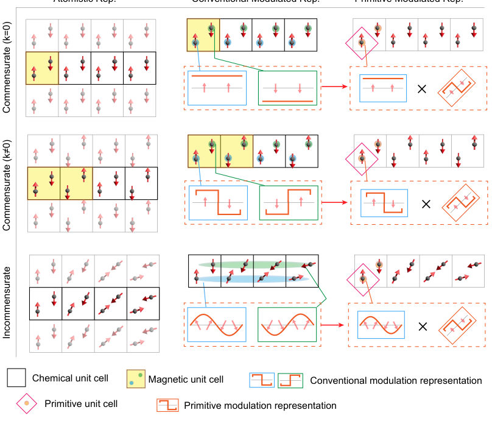
<figcaption class="paper-figure-caption"><b>Fig 1.</b> FIG. 1. Primitive Modulated Structure Representation (PMSR). Commensurate structures both with (middle row) and without (top row) non-zero propagation vectors (k) can be represented as periodic structures called magnetic unit cells that are rational multiples of their chemical unit cells. In contrast, by definition, there is no number of chemical unit cell that can capture the periodicity of incommensurate structures (bottom row). The modulated structure representation can captures the essences of all magnetic structure classes by, on top of embedding atomic sites in a unit cell with the magnetic moment vectors (m), providing how the magnetic moment vectors change (get modulated) when one...</figcaption>
</figure>
<figure class="paper-figure-card">
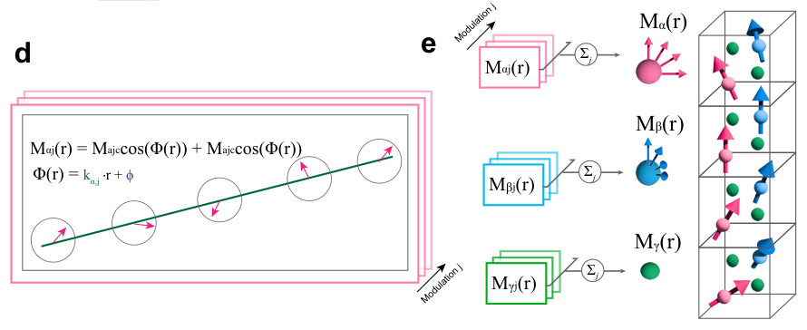
<figcaption class="paper-figure-caption"><b>Fig 2.</b> FIG. 2. Magnetic structure network (MSN). a) Construction of periodic graph of each material structure with atoms in a primitive chemical unit cell as nodes and edges defined only between neighboring atoms with interatomic distance under certain cut off radius rmax. b) E(3)-equivariant message passing with connections according to graph in a. c) Outputs of the model which can be divided into node level and graph level outputs which require extra aggregation from all nodes at the last layer of the model. The prediction of magnetic propagation vectors which are the properties of the whole structure uses the graph level output while the prediction of site-specific Fourier components uses the...</figcaption>
</figure>
<figure class="paper-figure-card">
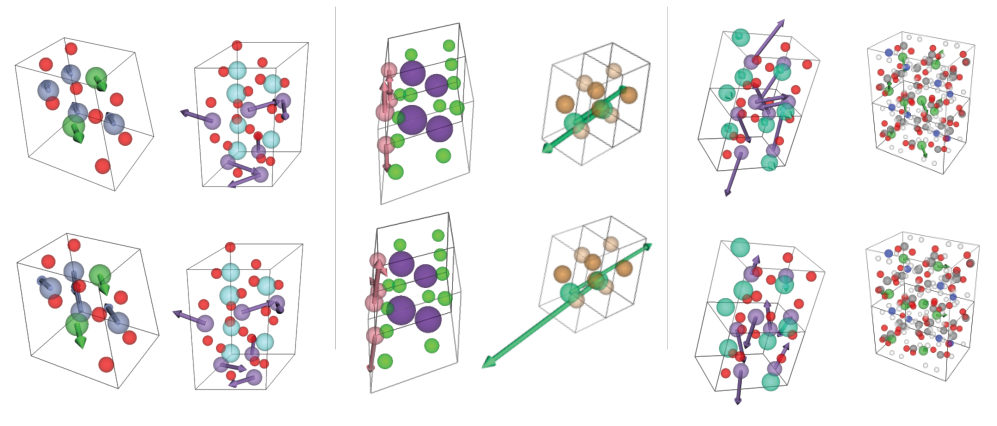
<figcaption class="paper-figure-caption"><b>Fig 3.</b> FIG. 3. Predicted magnetic structures. For each material (MAGNDATA ID, formula), the ground-truth structure from MAGNDATA (top) is shown alongside the model prediction (bottom). (a) Commensurate structures with zero propagation vector (k = 0). (b) Commensurate structures with a non-zero rational propagation vector. The visualization supercell is constructed from the ground-truth k-vector (expanding up to a factor of 2 per lattice direction) to make the spatial modulation of magnetic moments visible. (c) Incommensurate structures: the propagation vector has an irrational component, and the same supercell convention is applied for visualization. Moment directions are shown as arrows on each...</figcaption>
</figure>
</div>

<p><strong>Summary.</strong> This paper presents the Magnetic Structure Network (MSN), an E(3)-equivariant GNN designed to predict complex magnetic structures directly from atomic coordinates. It overcomes limitations in current methods by using the Primitive Modulated Structure Representation (PMSR) to unify the description of both simple and incommensurate magnetic orders. This provides a powerful, data-driven framework for accelerating the discovery of magnetic materials.</p>
<p><strong>Why it may be interesting.</strong> While focused on magnetism, the use of E(3)-equivariant GNNs and advanced representation learning (PMSR) for complex physical states is highly relevant to developing ML tools for quantum materials simulation.</p>
<details>
<summary>Detailed structure</summary>
<p><strong>Main problem.</strong> Determining the magnetic structure of materials is challenging due to costly experiments and the difficulty first-principles methods have with noncollinear or incommensurate magnetic orders.</p>
<p><strong>Main result.</strong> The proposed Magnetic Structure Network (MSN) successfully predicts full magnetic structures directly from atomic coordinates with high fidelity across commensurate and incommensurate phases.</p>
<p><strong>Method.</strong> The authors introduce the E(3)-equivariant Graph Neural Network (MSN) trained on experimental data, utilizing the Primitive Modulated Structure Representation (PMSR) to unify the description of all magnetic periodicities.</p>
<p><strong>Model / system.</strong> The model targets magnetic crystalline materials, predicting magnetic order parameters (Fourier components and propagation vectors) from the underlying atomic crystal structure.</p>
<p><strong>Key observables.</strong> Magnetic structure (collinear/non-collinear), propagation vectors (k), and site-specific magnetic moment Fourier components.</p>
<p><strong>Important parameters / regimes.</strong> Training data size (MAGNDATA, &gt;2,300 structures); the cutoff radius for graph construction.</p>
<p><strong>Assumptions / limitations.</strong> The model assumes a Heisenberg-type description for magnetic interactions, neglecting explicit anisotropic spin interactions; it also handles mathematical ambiguities related to global phase/rotation freedom.</p>
<p><strong>Figures summary.</strong> Figures illustrate the PMSR's ability to unify representations, the MSN's architecture (graph construction, E(3) message passing), and comparative predictions for $k=0$, rational $k
eq 0$, and irrational incommensurate $k$.</p>
<p><strong>Paper structure.</strong> The paper first establishes the limitations of existing methods, then introduces the PMSR to standardize representation, details the E(3)-equivariant MSN architecture, and finally presents the training objectives and reconstruction process.</p>
</details>
<details>
<summary>Abstract</summary>
<p>Magnetic order is a fundamental property of materials, governing collective behavior and enabling a broad range of functionalities. Yet magnetic structure remains difficult to determine: experiments are costly and specialized, while first-principles methods often struggle with the noncollinear and incommensurate orders found in real materials. Here we introduce magnetic structure network (MSN), an E(3) equivariant graph neural network that predicts both collinear and non-collinear magnetic structures directly from atomic crystal structures, trained directly on experimentally determined structures from MAGNDATA. By proposing the primitive modulated structure representation (PMSR), we are able to encode commensurate and incommensurate structures in a unified way without symmetry assumptions. The model achieves strong performance across all modulation components and reconstructs experimental magnetic structures with high fidelity. Our approach provides a scalable framework for rapid magnetic structure prediction and opens a route to data-driven discovery of magnetic materials.</p>
</details>
<p><sub><a href="#top">↑ back to top</a></sub></p>

<p><a id="paper-2605.16062"></a></p>
<h3 id="in-situ-correlative-semkpfm-for-semiconductor-devices-and-2d-heterostructures"><a href="http://arxiv.org/abs/2605.16062v1">In-situ correlative SEM/KPFM for semiconductor devices and 2D heterostructures</a></h3>
<p><strong>Authors:</strong> Prabhu Prasad Swain, Nahid Hosseini, Eveline. S Mayner, Aleksandra Radenovic, Marcos Penedo, Georg E. Fantner<br>
<strong>Type:</strong> experiment · <strong>Category:</strong> other · <strong>PDF:</strong> <a href="https://arxiv.org/pdf/2605.16062v1">https://arxiv.org/pdf/2605.16062v1</a><br>
<strong>Analysis basis:</strong> full PDF text, analyzed in chunks
<strong>Topic relevance:</strong> <code>spintronics-quantum-optics interface</code> <strong>3/5</strong> · <code>Kondo &amp; dissipative impurity</code> <strong>1/5</strong> · <code>analog quantum simulation</code> <strong>1/5</strong> · <code>driven-dissipative phase transition</code> <strong>1/5</strong> · <code>non-equilibrium dynamics</code> <strong>1/5</strong> · <code>quantum measurements</code> <strong>1/5</strong> · <code>quantum optics experiment</code> <strong>1/5</strong></p>
<div class="figure-strip-hint">↔ Scroll figures horizontally</div>
<div class="paper-figures-scroll">
<figure class="paper-figure-card">
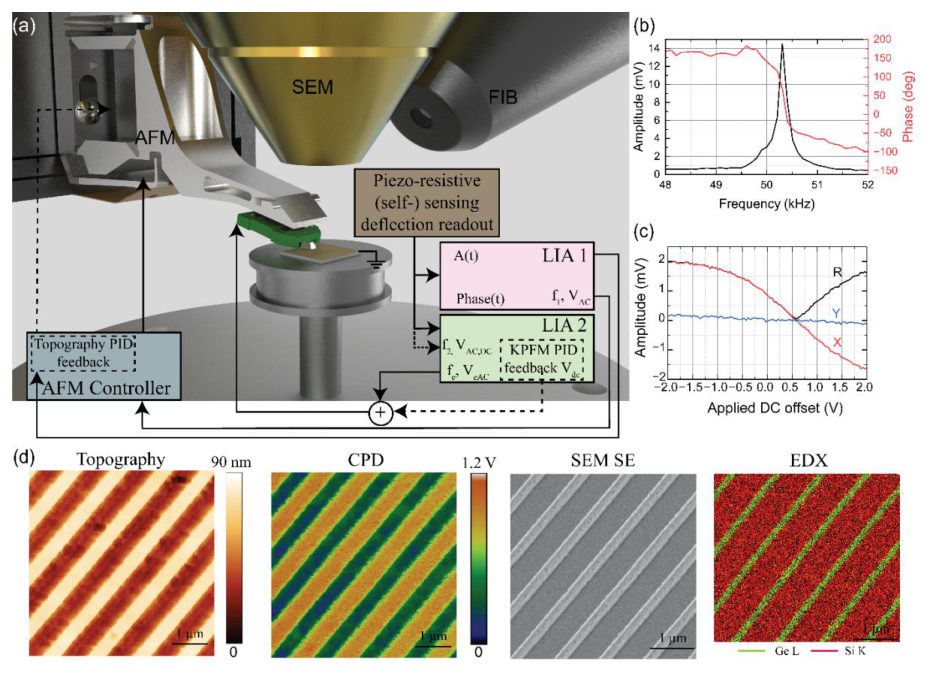
<figcaption class="paper-figure-caption"><b>Fig 1.</b> Fig. 1. In-situ KPFM inside SEM with piezo-resistive cantilever (a) 3D rendering of the</figcaption>
</figure>
<figure class="paper-figure-card">
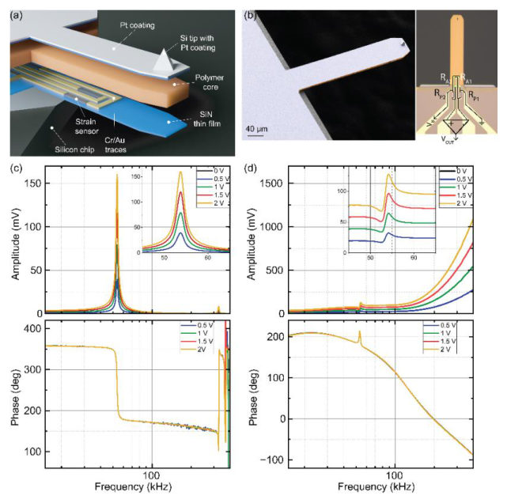
<figcaption class="paper-figure-caption"><b>Fig 2.</b> Fig. 2. In the piezo-resistive readout method, capacitive crosstalk affects KPFM</figcaption>
</figure>
<figure class="paper-figure-card">
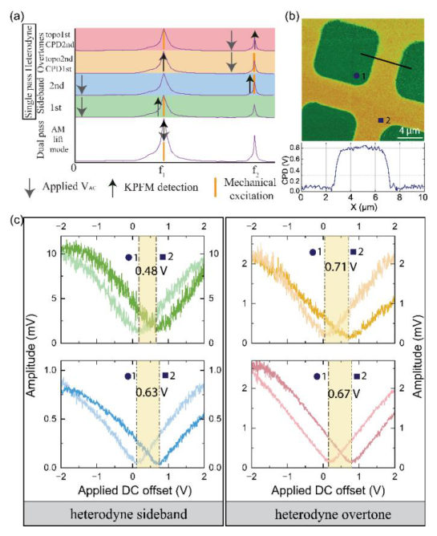
<figcaption class="paper-figure-caption"><b>Fig 3.</b> Fig. 3. Choice of the KPFM configuration to be used inside the vacuum chamber of the</figcaption>
</figure>
<figure class="paper-figure-card">
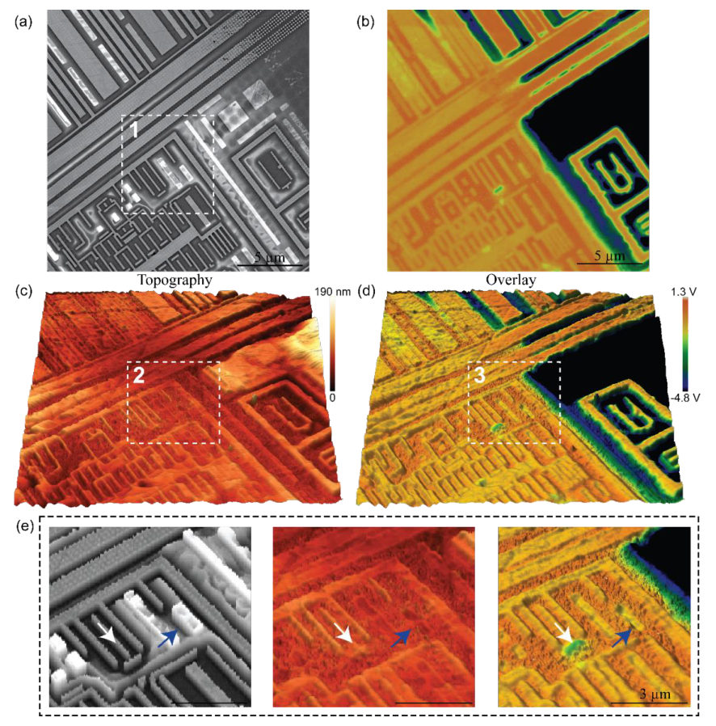
<figcaption class="paper-figure-caption"><b>Fig 4.</b> Fig. 4. Correlative KPFM-SEM analysis of semiconductor circuits. (a) SEM (secondary</figcaption>
</figure>
<figure class="paper-figure-card">
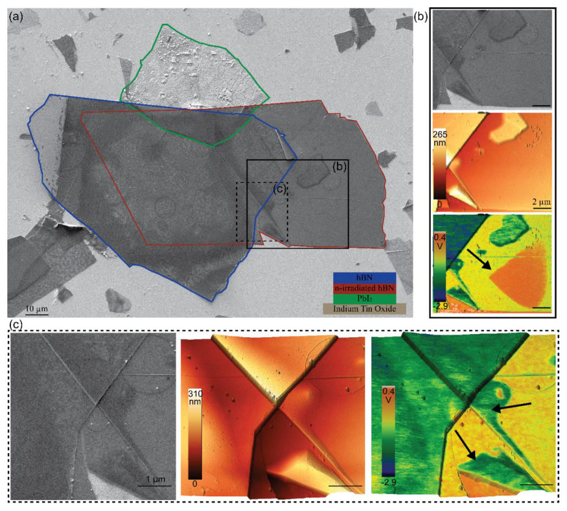
<figcaption class="paper-figure-caption"><b>Fig 5.</b> Fig. 5. Correlative KPFM-SEM analysis of 2D heterostructures deposited on an ITO</figcaption>
</figure>
</div>

<p><strong>Summary.</strong> This paper introduces a novel, robust technique for performing in-situ Kelvin Probe Force Microscopy (KPFM) inside a Scanning Electron Microscope (SEM). By employing single-pass heterodyne detection, the authors overcome capacitive crosstalk to simultaneously map surface topography and local electronic potential (CPD) on semiconductor devices and 2D heterostructures. This allows for unprecedented correlative analysis crucial for failure analysis and fundamental materials characterization.</p>
<p><strong>Why it may be interesting.</strong> While highly experimental, the detailed analysis of surface potential shifts due to beam exposure (charge trapping, contamination) provides insights into surface physics and charge dynamics in nanoscale devices, which can inform models of open quantum systems interacting with noisy environments.</p>
<details>
<summary>Detailed structure</summary>
<p><strong>Main problem.</strong> The primary challenge is achieving simultaneous, in-situ measurement of electronic and structural properties in advanced semiconductor and 2D heterostructure devices.</p>
<p><strong>Main result.</strong> The authors successfully demonstrated a robust, versatile correlative imaging mode by implementing single-pass heterodyne KPFM inside an SEM, overcoming capacitive crosstalk.</p>
<p><strong>Method.</strong> They utilized a single-pass heterodyne Kelvin probe force microscopy technique, demodulating excitation and detection signals to map topography and Contact Potential Difference (CPD) simultaneously.</p>
<p><strong>Model / system.</strong> The work focuses on semiconductor circuits and 2D heterostructures (like hBN on ITO) analyzed using a self-sensing, piezoresistive cantilever setup integrated within an SEM.</p>
<p><strong>Key observables.</strong> Topography, Contact Potential Difference (CPD), and elemental composition (via EDS).</p>
<p><strong>Important parameters / regimes.</strong> CPD energy resolution of 1–20 meV; spatial resolution &lt;10 nm; operation in vacuum environment.</p>
<p><strong>Assumptions / limitations.</strong> The method assumes that heterodyne detection effectively decouples excitation and detection signals, mitigating capacitive crosstalk inherent to self-sensing cantilevers.</p>
<p><strong>Figures summary.</strong> Figures illustrate the setup integration, the principle of heterodyne KPFM, and comparative maps showing correlated SEM/KPFM/Topography data on both semiconductor circuits and 2D heterostructures, including effects of electron beam exposure.</p>
<p><strong>Paper structure.</strong> The paper progresses from establishing the need for correlative measurements, detailing the novel heterodyne KPFM technique to overcome crosstalk, demonstrating its application on 2D materials and circuits, and finally analyzing the complex influence of electron and ion beam exposure on the measured surface potential.</p>
</details>
<details>
<summary>Abstract</summary>
<p>Correlative nanoscale surface characterization benefits from simultaneously measuring electronic and structural properties in the same environment, a capability that is essential for modern-day materials science and semiconductor failure analysis. In-situ AFM-SEM measurements facilitated by self-sensing cantilevers offer great potential here; however, they are limited due to their inherent capacitive crosstalk. Here, we demonstrate for the first time the in-situ implementation of single-pass heterodyne Kelvin probe force microscopy inside a scanning electron microscope, using piezo-resistive cantilevers. We overcome the capacitive crosstalk prevalent in piezo-resistive cantilevers by demodulating excitation and detection to simultaneously map surface topography and contact potential difference for correlation with compositional analysis. We systematically compare different operational modes of this heterodyne technique, elucidating their spatial resolution, signal sensitivity, and signal-to-noise ratio. The integrated approach yields exceptional signal quality and reveals how electron beam scan parameters can directly influence surface potential contrast. We demonstrate this correlative analysis workflow on two-dimensional heterostructures and semiconductor circuits. This work establishes a robust and versatile correlative imaging mode for in-situ Kelvin force and topography imaging inside a scanning electron microscope for next-generation semiconductor device analysis and materials science.</p>
</details>
<p><sub><a href="#top">↑ back to top</a></sub></p>

<p><a id="paper-2605.15292"></a></p>
<h3 id="zitterbewegung-velocity-in-semiclassical-electron-dynamics"><a href="http://arxiv.org/abs/2605.15292v1">Zitterbewegung velocity in semiclassical electron dynamics</a></h3>
<p><strong>Authors:</strong> Dimitrie Culcer<br>
<strong>Type:</strong> theory · <strong>Category:</strong> other · <strong>PDF:</strong> <a href="https://arxiv.org/pdf/2605.15292v1">https://arxiv.org/pdf/2605.15292v1</a><br>
<strong>Analysis basis:</strong> full PDF text, analyzed in chunks
<strong>Topic relevance:</strong> <code>Keldysh / 2PI / non-Gaussian methods</code> <strong>3/5</strong> · <code>methods for driven-dissipative</code> <strong>3/5</strong> · <code>non-equilibrium dynamics</code> <strong>3/5</strong></p>
<div class="figure-strip-hint">↔ Scroll figures horizontally</div>
<div class="paper-figures-scroll">
<figure class="paper-figure-card">
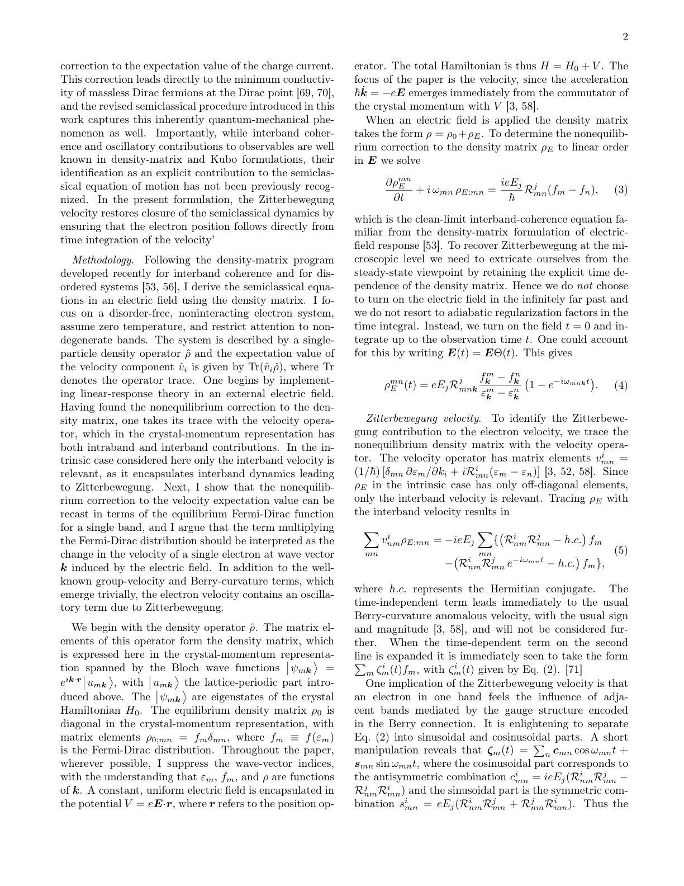
<figcaption class="paper-figure-caption"><b>Fig 1.</b> Low-resolution page preview, page 2</figcaption>
</figure>
<figure class="paper-figure-card">
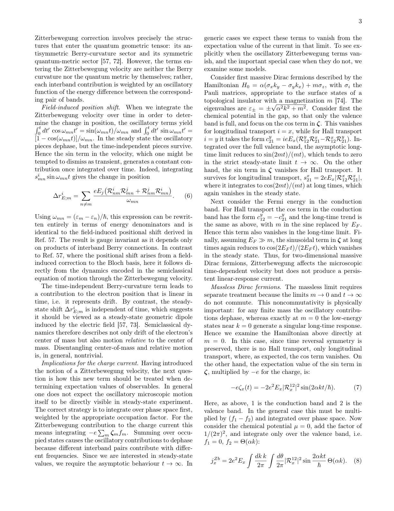
<figcaption class="paper-figure-caption"><b>Fig 2.</b> Low-resolution page preview, page 3</figcaption>
</figure>
<figure class="paper-figure-card">
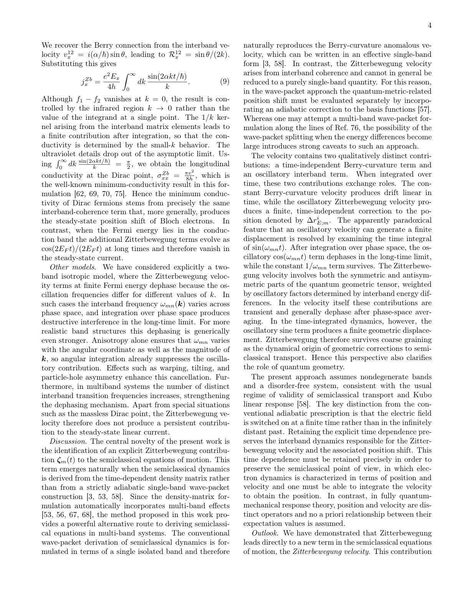
<figcaption class="paper-figure-caption"><b>Fig 3.</b> Low-resolution page preview, page 4</figcaption>
</figure>
<figure class="paper-figure-card">
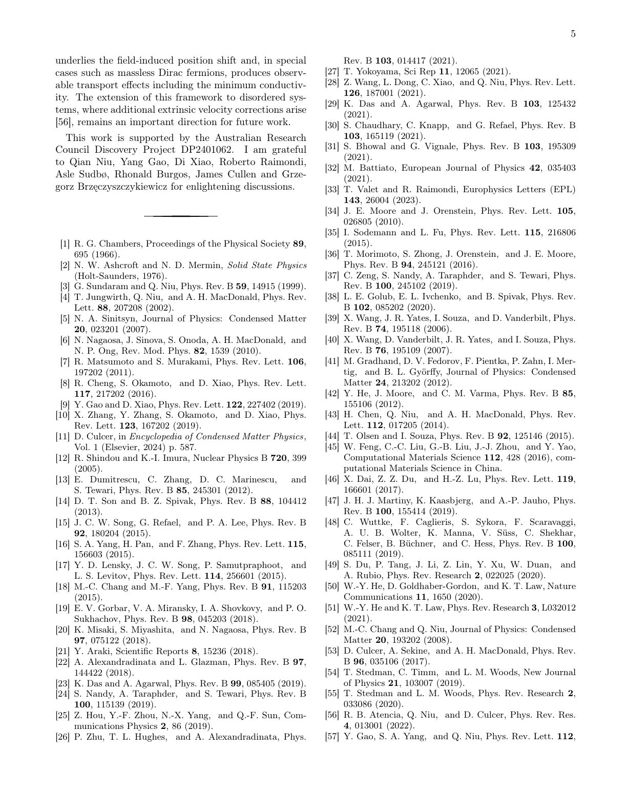
<figcaption class="paper-figure-caption"><b>Fig 4.</b> Low-resolution page preview, page 5</figcaption>
</figure>
<figure class="paper-figure-card">
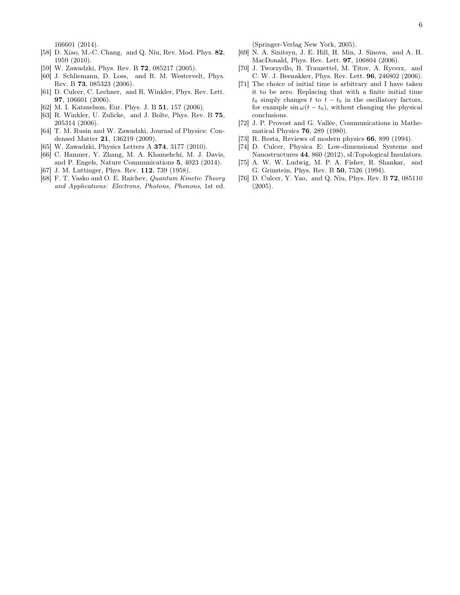
<figcaption class="paper-figure-caption"><b>Fig 5.</b> Low-resolution page preview, page 6</figcaption>
</figure>
</div>

<p><strong>Summary.</strong> This work addresses the failure of standard semiclassical models to capture Zitterbewegung in electron dynamics. By deriving a new, time-dependent Zitterbewegung velocity from the quantum Liouville equation, the authors resolve the position-shift paradox. The findings are particularly significant for massless Dirac fermions, where this velocity term directly accounts for the minimum conductivity.</p>
<p><strong>Why it may be interesting.</strong> The explicit inclusion of Zitterbewegung velocity, derived from quantum dynamics, provides a necessary correction to semiclassical transport equations, offering insights into how quantum coherence manifests in macroscopic transport properties like conductivity.</p>
<details>
<summary>Detailed structure</summary>
<p><strong>Main problem.</strong> Conventional semiclassical treatments fail to account for Zitterbewegung, leading to a 'position-shift paradox' when calculating electron dynamics in external fields.</p>
<p><strong>Main result.</strong> The paper identifies a new, intrinsic Zitterbewegung velocity that resolves the position-shift paradox and yields a finite, non-zero minimum conductivity for massless Dirac fermions.</p>
<p><strong>Method.</strong> The analysis starts from the quantum Liouville equation, retaining explicit time dependence by switching on the electric field at t=0, and deriving the Zitterbewegung velocity from the non-equilibrium density matrix.</p>
<p><strong>Model / system.</strong> The study concerns electron dynamics in a clean, disorder-free, noninteracting solid, modeled using a Hamiltonian $H = H_0 + eE \cdot r$ under a constant electric field $E$.</p>
<p><strong>Key observables.</strong> Zitterbewegung velocity ($\mathbf{\zeta}_m(t)$), field-induced position shift ($\Delta r_{i;E,m}$), and charge current expectation value.</p>
<p><strong>Important parameters / regimes.</strong> Electric field strength ($E$), interband energy differences ($\omega_{mn}$), and the limit of massless Dirac fermions ($\mu=0$).</p>
<p><strong>Assumptions / limitations.</strong> The system is assumed to be disorder-free, noninteracting, and the analysis requires moving beyond the steady-state linear-response assumption.</p>
<p><strong>Paper structure.</strong> The paper builds by first establishing the failure of conventional semiclassical methods, then deriving the new Zitterbewegung velocity from the quantum Liouville equation, and finally calculating its contribution to the position shift and current in the long-time limit.</p>
</details>
<details>
<summary>Abstract</summary>
<p>Zitterbewegung plays a major role in electron dynamics in solids, yet is not captured in conventional semiclassical treatments. Here, starting from the quantum Liouville equation, I identify a new Zitterbewegung velocity, which involves the symmetric and antisymmetric components of the quantum geometric tensor oscillating out of phase. The Zitterbewegung velocity resolves the position-shift paradox, recovering the field-induced shift in an electron's position by integrating the semiclassical equations, and is directly related to the famous minimum conductivity of massless Dirac fermions.</p>
</details>
<p><sub><a href="#top">↑ back to top</a></sub></p>

<p><a id="paper-2605.15883"></a></p>
<h3 id="stable-magnetic-nanodomains-engineered-via-ga-ion-irradiation-for-deterministic-sequential-switching"><a href="http://arxiv.org/abs/2605.15883v1">Stable magnetic nanodomains engineered via Ga+-ion irradiation for deterministic sequential switching</a></h3>
<p><strong>Authors:</strong> Gijs W. A. Simons, Rik F. J. van Haren, Bert Koopmans<br>
<strong>Type:</strong> both · <strong>Category:</strong> other · <strong>PDF:</strong> <a href="https://arxiv.org/pdf/2605.15883v1">https://arxiv.org/pdf/2605.15883v1</a><br>
<strong>Analysis basis:</strong> full PDF text, analyzed in chunks
<strong>Topic relevance:</strong> <code>spintronics-quantum-optics interface</code> <strong>3/5</strong> · <code>analog quantum simulation</code> <strong>2/5</strong> · <code>Frenkel-Kontorova</code> <strong>1/5</strong> · <code>driven-dissipative phase transition</code> <strong>1/5</strong> · <code>non-equilibrium dynamics</code> <strong>1/5</strong></p>
<div class="figure-strip-hint">↔ Scroll figures horizontally</div>
<div class="paper-figures-scroll">
<figure class="paper-figure-card">
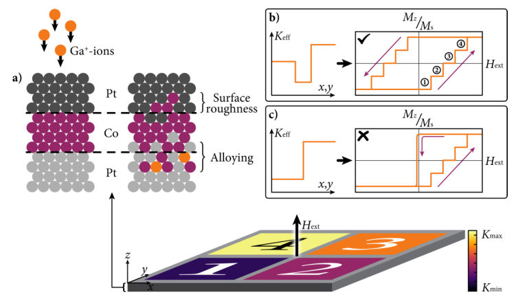
<figcaption class="paper-figure-caption"><b>Fig 1.</b> Fig. 1 a) Schematic illustration of a focused Ga+-ion beam locally modifying an initially perpendicularly magnetized Pt/Co/Pt stack. Ion irradiation reduces the perpendicular magnetic anisotropy Keff in a dose-dependent manner, enabling continuous and spatially resolved tailoring of the magnetic energy landscape. b) Schematic anisotropy landscape across the transition between two magnetic domains with distinct anisotropy levels within the 2 × 2 array, separated by an engineered low-anisotropy well. The resulting stepped hysteresis behavior reflects deterministic and sequential magnetization reversal of the individual domains. c) Corresponding magnetic response in the absence of anisotropy...</figcaption>
</figure>
<figure class="paper-figure-card">
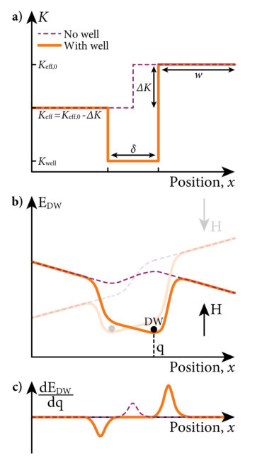
<figcaption class="paper-figure-caption"><b>Fig 2.</b> Fig. 2 a) Schematic anisotropy profile consisting of a well with width δ and depth Kwell relative to the surrounding material. b) Calculated energy of a Bloch-type domain wall EDW as a function of its position q under an external mag- netic field ⃗H. c) Derivative dEDW</figcaption>
</figure>
<figure class="paper-figure-card">
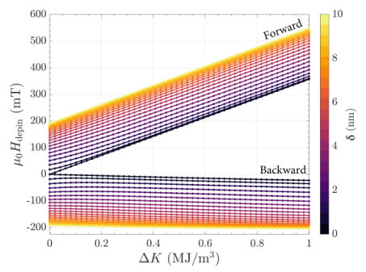
<figcaption class="paper-figure-caption"><b>Fig 3.</b> Fig. 3 The calculated forward and backward depinning fields of a Bloch wall (Aex = 13 pJm−1) inside a single anisotropy well (Kwell = −0.2 MJ/m3, Keff = 0.5 MJ/m3) as a function of anisotropy contrast ∆K and well width δ. The field difference between the two directions increases with ∆K and saturates as the well becomes wider than the domain-wall width.</figcaption>
</figure>
<figure class="paper-figure-card">
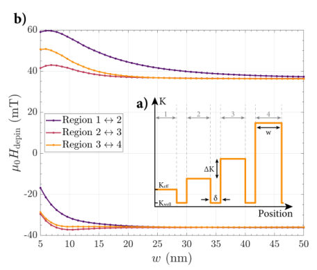
<figcaption class="paper-figure-caption"><b>Fig 4.</b> Fig. 4 An example of a four-region anisotropy profile comprising three anisotropy wells (Keff = 0.3 MJm−3, Kwell = −0.2 MJm−3, ∆K = 0.1 MJm−3, and δ = 15 nm). a) Corresponding energy landscape and b) depinning- field contrast between adjacent regions as a function of region width w. Each region supports a distinct minimum, enabling deterministic sequential switching. The contrast saturates once w ≳50 nm, defining the minimum size for stable, independently pinned regions.</figcaption>
</figure>
<figure class="paper-figure-card">
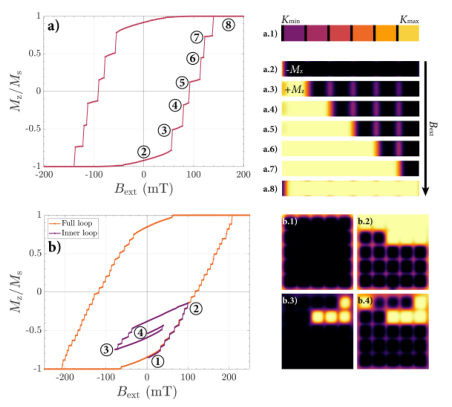
<figcaption class="paper-figure-caption"><b>Fig 5.</b> Fig. 5 Micromagnetic validation of anisotropy- well–induced sequential switching. a) simulation of a 400 × 400 × 1 nm3 Co film patterned into six regions separated by anisotropy wells, using K0 = 0.1 MJm−3, Kwell = −0.2 MJm−3, ∆K = 0.03 MJm−3, δ = 15 nm, and w = 50 nm. Step-like switching in the hysteresis loop reflects sequential depinning of the domain wall. b) Simu- lation of a 340×340×1 nm3 film patterned into 25 regions arranged in a grid with anisotropy values increasing in a serpentine order from 0.10 to 0.82 MJm−3, starting from the top-left corner. The full hysteresis loop (orange) and field-pulse-induced switching sequence (purple) demon- strate the ability to program complex...</figcaption>
</figure>
</div>

<p><strong>Summary.</strong> This research presents a method to deterministically control magnetic domain switching in nanoscale spintronic devices by using focused ion irradiation to engineer precise, spatially varying magnetic anisotropy gradients. By replacing random pinning sites with predictable 'anisotropy wells,' the authors achieve robust, sequential, and programmable magnetic state switching, opening a scalable pathway for next-generation memory and logic devices.</p>
<p><strong>Why it may be interesting.</strong> While focused on magnetism, the concept of engineering a potential energy landscape (the anisotropy profile) to guide the dynamics of a system (the domain wall) is analogous to designing engineered potentials in quantum systems to control quantum state evolution or tunneling pathways.</p>
<details>
<summary>Detailed structure</summary>
<p><strong>Main problem.</strong> The primary challenge is achieving stable, deterministic, and scalable control over magnetic domain formation at the nanoscale, overcoming limitations imposed by stochastic defect-mediated pinning.</p>
<p><strong>Main result.</strong> The authors demonstrate that engineering spatially varying magnetic anisotropy gradients using focused Ga+-ion irradiation provides a deterministic alternative to conventional pinning mechanisms, enabling robust, sequential, and programmable magnetic-state switching.</p>
<p><strong>Method.</strong> The work combines analytical modeling of domain-wall energetics with experimental realization using ion irradiation to pattern anisotropy wells in ferromagnetic thin films, validated by micromagnetic simulations and AHE/MOKE measurements.</p>
<p><strong>Model / system.</strong> The system involves perpendicularly magnetized Pt/Co/Pt multilayers where the effective magnetic anisotropy ($K_{	ext{eff}}$) is locally modified by ion irradiation. The theoretical framework models domain-wall (DW) energetics in graded anisotropy profiles, predicting depinning fields based on anisotropy contrast ($\Delta K$).</p>
<p><strong>Key observables.</strong> Sequential magnetization plateaus observed in AHE hysteresis loops, the magnitude of the depinning field ($H_{	ext{pin}}$), and the dependence of $K_{	ext{eff}}$ on ion dose.</p>
<p><strong>Important parameters / regimes.</strong> Anisotropy contrast ($\Delta K$), well width ($\delta$), domain-wall width ($\lambda$), and the characteristic length scale of the patterned regions (approaching 100 nm).</p>
<p><strong>Assumptions / limitations.</strong> The analytical model assumes a fixed DW profile and neglects thermal activation and microstructural disorder, providing upper-bound estimates for pinning fields.</p>
<p><strong>Figures summary.</strong> Figures illustrate schematic anisotropy landscapes, calculated DW energy profiles, and experimental/simulated hysteresis loops showing distinct, sequential switching steps corresponding to engineered anisotropy wells.</p>
<p><strong>Paper structure.</strong> The paper progresses from identifying the problem of stochastic pinning to developing an analytical model for anisotropy-controlled pinning, demonstrating this control via ion irradiation on patterned devices, and finally validating the scalability and determinism of the engineered energy landscape.</p>
</details>
<details>
<summary>Abstract</summary>
<p>Precise control of magnetic domain formation at the nanoscale remains constrained by stochastic defect-mediated and unstable pinning, limiting scalability and reproducibility in spintronic architectures. Here we demonstrate that spatially engineered anisotropy gradients provide a deterministic alternative. Using focused Ga+-ion irradiation, we pattern magnetic energy landscapes containing nanoscale "anisotropy wells" that confine magnetic domain walls and enable bidirectional sequential switching without reliance on difficult-to-control material disorder. An analytical framework describing domain-wall energetics in graded anisotropy profiles yields predictive design rules for depinning and stability, which are supported by micromagnetic simulations and experiments. We realize programmable multi-domain configurations in continuous ferromagnetic films and demonstrate robust, reproducible switching of 750 nm regions, while first results for 100 nm are shown, approaching the theoretical limit set by the domain-wall width. By replacing unstable pinning with engineered energy landscapes, this anisotropy landscape establishes a scalable materials strategy for deterministic magnetic-state programming and opens a pathway toward dense, energy-efficient spintronic and reconfigurable magnetic nanodevices.</p>
</details>
<p><sub><a href="#top">↑ back to top</a></sub></p>

<p><a id="paper-2605.15590"></a></p>
<h3 id="generalized-error-bounds-in-the-recovery-of-solitary-wave-profiles"><a href="http://arxiv.org/abs/2605.15590v1">Generalized Error Bounds in the Recovery of Solitary Wave Profiles</a></h3>
<p><strong>Authors:</strong> Daniel Sinambela<br>
<strong>Type:</strong> theory · <strong>Category:</strong> other · <strong>PDF:</strong> <a href="https://arxiv.org/pdf/2605.15590v1">https://arxiv.org/pdf/2605.15590v1</a><br>
<strong>Analysis basis:</strong> full PDF text, analyzed in chunks
<strong>Topic relevance:</strong> <code>Keldysh / 2PI / non-Gaussian methods</code> <strong>2/5</strong> · <code>entanglement &amp; information structure</code> <strong>2/5</strong> · <code>methods for driven-dissipative</code> <strong>2/5</strong> · <code>analog quantum simulation</code> <strong>1/5</strong> · <code>correlated / nonlocal dissipation</code> <strong>1/5</strong> · <code>driven-dissipative phase transition</code> <strong>1/5</strong> · <code>non-equilibrium dynamics</code> <strong>1/5</strong> · <code>non-equilibrium universality</code> <strong>1/5</strong></p>
<div class="figure-strip-hint">↔ Scroll figures horizontally</div>
<div class="paper-figures-scroll">
<figure class="paper-figure-card">
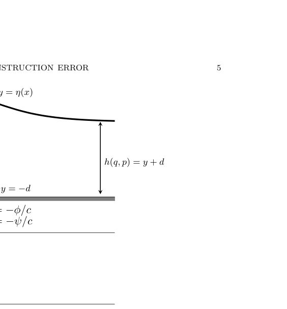
<figcaption class="paper-figure-caption"><b>Fig 1.</b> Figure 1. The Hodograph transform</figcaption>
</figure>
<figure class="paper-figure-card">
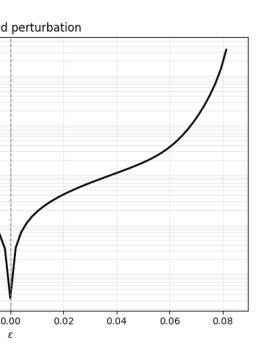
<figcaption class="paper-figure-caption"><b>Fig 2.</b> Figure 2. Reconstruction error due to wave-speed perturbation</figcaption>
</figure>
<figure class="paper-figure-card">
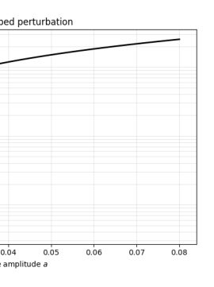
<figcaption class="paper-figure-caption"><b>Fig 3.</b> Figure 3. Reconstruction error due to bed-pressure perturbation</figcaption>
</figure>
<figure class="paper-figure-card">
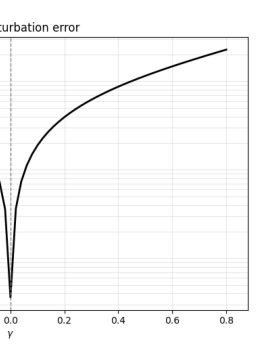
<figcaption class="paper-figure-caption"><b>Fig 4.</b> Figure 4. Reconstruction error due to depth perturbation</figcaption>
</figure>
</div>

<p><strong>Summary.</strong> This paper rigorously analyzes how accurately the free-surface profile of solitary water waves can be recovered from imperfect measurements of the seabed pressure trace. By employing the hodograph transform and advanced complex analysis, the authors derive stability estimates proving that the reconstruction error grows sublinearly with the size of the measurement perturbations. This work provides a strong mathematical foundation for inverse problems in fluid dynamics.</p>
<p><strong>Why it may be interesting.</strong> While the subject is fluid dynamics, the mathematical machinery—relying heavily on complex analysis, Fourier decay estimates, and stability analysis of inverse problems—is highly relevant to the rigorous mathematical treatment of open quantum systems or wave propagation in complex media.</p>
<details>
<summary>Detailed structure</summary>
<p><strong>Main problem.</strong> The paper investigates the mathematical robustness and stability of explicit formulas used to reconstruct the free-surface profile of two-dimensional irrotational solitary water waves.</p>
<p><strong>Main result.</strong> The authors derive explicit $L^2$ error estimates showing that the reconstruction error depends sublinearly on the size of simultaneous perturbations in wave speed, pressure trace, and undisturbed depth.</p>
<p><strong>Method.</strong> The analysis employs the hodograph transform to map the free-boundary problem to a fixed domain, followed by advanced complex analysis techniques like holomorphic extension and Paley-Wiener Fourier-decay estimates.</p>
<p><strong>Model / system.</strong> The physical system is two-dimensional irrotational solitary water waves governed by the steady irrotational incompressible Euler equations in a moving frame. The analysis is performed in the hodograph domain.</p>
<p><strong>Key observables.</strong> Free-surface profile ($\eta(x)$), dynamic pressure trace ($p(x)$), wave speed ($c$), and undisturbed depth ($d$).</p>
<p><strong>Important parameters / regimes.</strong> Perturbation sizes ($\epsilon, \delta, \gamma$), wave number $k$, and depth $d$.</p>
<p><strong>Assumptions / limitations.</strong> The analysis assumes the no-stagnation condition ($u-c < 0$) and that perturbations are sufficiently small to maintain the validity of the reconstruction formulas.</p>
<p><strong>Figures summary.</strong> Figures illustrate the Hodograph transform mapping the fluid domain to a fixed strip, and subsequent figures show the dependence of the reconstruction error on perturbations in wave speed, pressure amplitude, and depth.</p>
<p><strong>Paper structure.</strong> The paper progresses from establishing the physical problem and initial linear approximations to utilizing the hodograph transform. It then develops the core error analysis using complex methods, culminating in explicit error bounds and numerical validation for various perturbation scenarios.</p>
</details>
<details>
<summary>Abstract</summary>
<p>We investigate the robustness of Constantin's explicit reconstruction formula for two-dimensional irrotational solitary water waves. This formula recovers the free-surface profile from the dynamic pressure trace at the bed and depends on both the wave speed and the undisturbed depth. We consider simultaneous perturbations in these three quantities and derive an $L^2$ error estimate for the reconstructed profile. The proof uses the hodograph transform, holomorphic extension arguments, and Paley--Wiener Fourier-decay estimates, yielding stability estimates with sublinear dependence on the perturbation size. We include numerical computations to illustrate the effects of specifically designed perturbations.</p>
</details>
<p><sub><a href="#top">↑ back to top</a></sub></p>

<p><a id="paper-2605.16110"></a></p>
<h3 id="causation-guided-mechanism-identification-and-interpretable-reduced-order-modeling-of-damage-driving-grain-boundary-stress-in-creep"><a href="http://arxiv.org/abs/2605.16110v1">Causation-guided mechanism identification and interpretable reduced-order modeling of damage-driving grain-boundary stress in creep</a></h3>
<p><strong>Authors:</strong> Weichen Kong, Yanwei Dai, Yinglin Zhang, Yinghua Liu<br>
<strong>Type:</strong> theory · <strong>Category:</strong> numerical methods · <strong>PDF:</strong> <a href="https://arxiv.org/pdf/2605.16110v1">https://arxiv.org/pdf/2605.16110v1</a><br>
<strong>Analysis basis:</strong> full PDF text, analyzed in chunks
<strong>Topic relevance:</strong> <code>entanglement &amp; information structure</code> <strong>2/5</strong> · <code>methods for driven-dissipative</code> <strong>2/5</strong> · <code>Keldysh / 2PI / non-Gaussian methods</code> <strong>1/5</strong></p>
<div class="figure-strip-hint">↔ Scroll figures horizontally</div>
<div class="paper-figures-scroll">
<figure class="paper-figure-card">
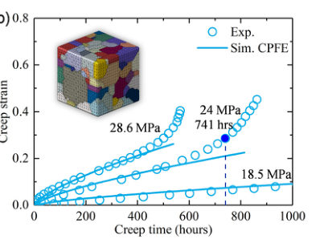
<figcaption class="paper-figure-caption"><b>Fig 1.</b> Fig. 1 (a) Kinematics and configurations of single crystals deformation; (b) Comparison between</figcaption>
</figure>
<figure class="paper-figure-card">
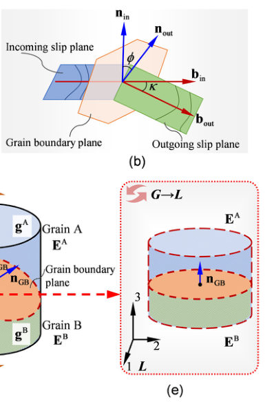
<figcaption class="paper-figure-caption"><b>Fig 2.</b> Fig. 2 Schematic illustrations of (a) the average orientation of a bicrystal with [0 0 1] sample</figcaption>
</figure>
<figure class="paper-figure-card">
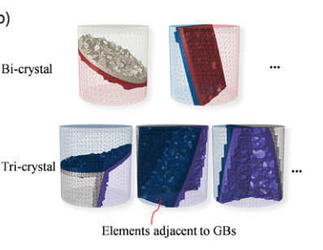
<figcaption class="paper-figure-caption"><b>Fig 3.</b> Fig. 3 (a) Uniaxial and multiaxial loading conditions; (b) finite element models of representative</figcaption>
</figure>
<figure class="paper-figure-card">
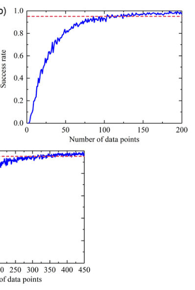
<figcaption class="paper-figure-caption"><b>Fig 4.</b> Fig. 4 Kolmogorov–Smirnov test on the GB normal stress in (a) bicrystal configuration under</figcaption>
</figure>
<figure class="paper-figure-card">
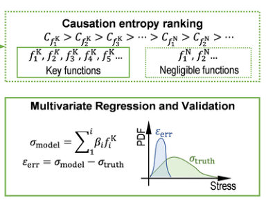
<figcaption class="paper-figure-caption"><b>Fig 5.</b> Fig. 5 General procedure for selecting candidate functions from microscale feature based on</figcaption>
</figure>
</div>

<p><strong>Summary.</strong> This work develops a novel, physics-guided machine learning framework to predict local grain boundary stress during creep in superalloys. By combining detailed crystal plasticity simulations with causation entropy analysis, the authors distill complex microstructural data into a reduced-order model. This provides a highly interpretable tool for understanding the fundamental physical mechanisms governing material failure at the microscale.</p>
<p><strong>Why it may be interesting.</strong> While focused on materials science, the methodology—using information theory (causation entropy) to distill complex, high-dimensional physical data into a minimal, interpretable functional form—is highly relevant to developing physics-informed machine learning models in quantum many-body systems.</p>
<details>
<summary>Detailed structure</summary>
<p><strong>Main problem.</strong> The core challenge is identifying the key physical characteristics that govern the high-dimensional, nonlinear local stress state at grain boundaries during creep in polycrystalline superalloys.</p>
<p><strong>Main result.</strong> The study successfully identifies a reduced set of physically relevant, dominant characteristics (like GB inclination angle and elastic mismatch) that allow for the development of an interpretable, reduced-order model for predicting GB normal stress.</p>
<p><strong>Method.</strong> It combines Crystal Plasticity Finite Element (CPFE) simulations to generate data with an advanced causation-guided machine-learning framework that uses causation entropy for mechanistic feature selection.</p>
<p><strong>Model / system.</strong> The physical system is polycrystalline superalloys undergoing creep deformation. The model involves simulating minimal grain clusters (bicrystal/tricrystal) using CPFE, incorporating dislocation glide and climb mechanisms.</p>
<p><strong>Key observables.</strong> Grain Boundary (GB) normal stress ($\sigma_{33}$ or $\sigma_{L33}$), slip transmission factor, GB inclination angle, and various measures of elastic modulus mismatch.</p>
<p><strong>Important parameters / regimes.</strong> Creep secondary creep regime, multiaxial loading conditions, and the set of 18 physically motivated microstructural and mechanical descriptors.</p>
<p><strong>Assumptions / limitations.</strong> The analysis assumes that the governing physics can be captured by a reduced-order representation derived from the identified key functional relationships, and that the causation entropy method correctly isolates causal mechanisms over mere correlation.</p>
<p><strong>Figures summary.</strong> Figures illustrate the application of the framework under uniaxial and multiaxial loading, showing heat maps of top candidate features and comparing the predictive performance of the ML model using original vs. key functions.</p>
<p><strong>Paper structure.</strong> The paper progresses by first establishing the physical necessity of the approach (limitations of classical/purely data-driven models), then detailing the CPFE simulation setup and the comprehensive calculation of numerous mechanics-informed descriptors, culminating in the application of causation entropy to build and validate the reduced-order, interpretable model.</p>
</details>
<details>
<summary>Abstract</summary>
<p>Grain-boundary (GB) local stress is central to the initiation and evolution of long-term creep damage in polycrystalline superalloys. Owing to the high-dimensional nonlinear relationships between the GB stress response and multiple crystallographic, microstructural, and micromechanical characteristics, it remains challenging to identify the key characteristics governing GB stress and to elucidate their mechanisms of influence. Dislocation-climb-affected crystal-plasticity finite-element simulations of minimal grain clusters are combined with an integrated causation-guided machine-learning framework, in which mechanics-informed descriptors are analyzed by causation entropy to identify governing mechanisms and then distilled into a reduced-order regression form for interpretable prediction of GB normal stress. Among 18 physically motivated characteristics, the GB inclination angle, the slip transmission, the climb-related Schmid-type indicator, and the elastic-modulus mismatch are found to be dominant, revealing the coupled roles of interfacial geometry, crystallographic compatibility, creep stress relaxation, and micromechanical contrast. The identified characteristics hierarchy and functional representation remain effective under multiaxial loading and can be extended to tricrystal systems through physically interpretable nonlocal augmentation when a purely local description becomes insufficient, demonstrating strong physical consistency and robust generalizability across physical conditions. The extracted candidate functions also improve surrogate-model performance across multiple machine-learning model classes, providing supporting evidence for the physical relevance and efficiency of the identified representation. The proposed methods demonstrate strong potential for the development of interpretable machine-learning models and for the study of microscale nonlocal damage.</p>
</details>
<p><sub><a href="#top">↑ back to top</a></sub></p>

<p><a id="paper-2605.15610"></a></p>
<h3 id="non-relativistic-spin-orbit-interaction-in-triplet-superconductors-edelstein-effect-and-spin-pumping-by-electric-fields"><a href="http://arxiv.org/abs/2605.15610v1">Non-Relativistic Spin-Orbit Interaction in Triplet Superconductors: Edelstein Effect and Spin Pumping by Electric Fields</a></h3>
<p><strong>Authors:</strong> Ping Li, G. A. Bobkov, I. V. Bobkova, Tao Yu<br>
<strong>Type:</strong> theory · <strong>Category:</strong> other · <strong>PDF:</strong> <a href="https://arxiv.org/pdf/2605.15610v1">https://arxiv.org/pdf/2605.15610v1</a><br>
<strong>Analysis basis:</strong> full PDF text, analyzed in chunks
<strong>Topic relevance:</strong> <code>Keldysh / 2PI / non-Gaussian methods</code> <strong>2/5</strong> · <code>methods for driven-dissipative</code> <strong>1/5</strong></p>
<div class="figure-strip-hint">↔ Scroll figures horizontally</div>
<div class="paper-figures-scroll">
<figure class="paper-figure-card">
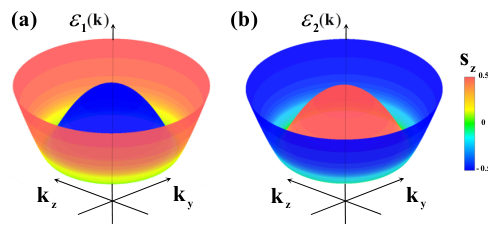
<figcaption class="paper-figure-caption"><b>Fig 1.</b> FIG. 1. Illustration of spin Sz ∈[−ℏ/2, ℏ/2] of Bogoliubov quasiparticles on the two degenerate bands {ε1(k), ε2(k)} of a triplet superconductor in the momentum space. The color maps represent the spin of quasiparticles Sz. Sz depends strongly on the wave vector near the Fermi wave vector kF .</figcaption>
</figure>
<figure class="paper-figure-card">
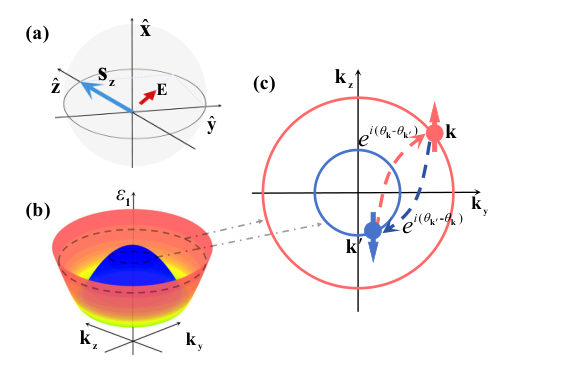
<figcaption class="paper-figure-caption"><b>Fig 2.</b> FIG. 2. Spin Edelstein effect in a p-wave superconductor. (a): an in-plane electric field E (red arrow) induces the spin den- sity polarized along the ˆz-direction (blue arrow). (b) &amp; (c): This spin polarization arises from an intra-band quasiparticle scattering process driven by the electric field, as illustrated for band 1 and addressed in the main text.</figcaption>
</figure>
<figure class="paper-figure-card">
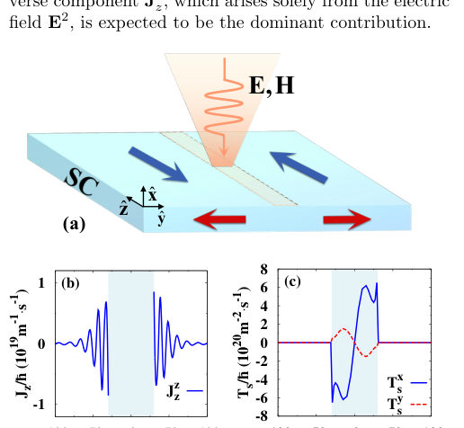
<figcaption class="paper-figure-caption"><b>Fig 3.</b> FIG. 3. Spin pumping into p-wave superconductor driven solely by local electric fields. The shadow region in (a)-(c) indicates the region of the near electric field. (a) illustrates the transverse (blue arrow) and longitudinal (red arrow) spin current pumped by the one-dimensional electromagnetic field. (b) depicts the spatial profile of the transverse spin current induced by the electric field. (c) plots the spatial profile of the spin-torque density polarized along the ˆx- and ˆy-directions excited by the joint effect of electric and magnetic fields.</figcaption>
</figure>
</div>

<p><strong>Summary.</strong> This work reveals a unique, non-relativistic spin-orbit coupling mechanism within triplet superconductors. By analyzing the quasiparticle spin texture induced by the superconducting order parameter, the authors show that an applied electric field can generate a spin polarization (Edelstein effect) and a DC spin current. This offers a powerful, field-driven route for manipulating spin currents in unconventional superconductors.</p>
<p><strong>Why it may be interesting.</strong> The mechanism of generating spin currents purely from electric fields in superconductors, without relying on strong relativistic SOC, provides a novel platform for studying spin-charge conversion in unconventional quantum materials.</p>
<details>
<summary>Detailed structure</summary>
<p><strong>Main problem.</strong> The paper investigates a non-relativistic form of spin-orbit coupling in triplet superconductors, enabling spin manipulation using electric fields even without relativistic SOC.</p>
<p><strong>Main result.</strong> An in-plane electric field can induce a spin polarization (Edelstein effect) and drive a DC spin current in a p-wave superconductor via intrinsic quasiparticle spin-orbital entanglement.</p>
<p><strong>Method.</strong> The analysis uses linear response theory applied to the Nambu space Hamiltonian, calculating spin and spin-current densities based on quasiparticle scattering amplitudes.</p>
<p><strong>Model / system.</strong> The system is a triplet p-wave superconducting film, modeled using a Nambu space Hamiltonian. The key physics involves the triplet order parameter inducing momentum-dependent spin textures in Bogoliubov quasiparticles.</p>
<p><strong>Key observables.</strong> Spin polarization ($\delta \mathbf{s}$), DC spin-current density ($\mathbf{J}_s$), and spin-torque density ($\mathbf{T}_s$).</p>
<p><strong>Important parameters / regimes.</strong> The analysis is valid for $\hbar\omega < 2\Delta_t$, and the spin polarization is restricted to the $\hat{z}$-direction for in-plane fields.</p>
<p><strong>Assumptions / limitations.</strong> The analysis is performed in the linear response regime, and the model assumes a minimal description of the triplet p-wave superconductor.</p>
<p><strong>Figures summary.</strong> Figure 1 illustrates the wave-vector-dependent spin of quasiparticles. Figure 2 demonstrates the Spin Edelstein effect, showing $\hat{z}$-polarized spin density induced by an in-plane electric field.</p>
<p><strong>Paper structure.</strong> The paper establishes the non-relativistic SOC mechanism via the triplet order parameter, calculates the linear response to external E/H fields, and finally derives the resulting DC spin current and spin polarization.</p>
</details>
<details>
<summary>Abstract</summary>
<p>Non-relativistic momentum-dependent spin splitting, as observed in collinear altermagnets and non-collinear $p$-wave magnets, provides exciting avenues for controlling spin dynamics. Here, we reveal a distinct form of non-relativistic ``spin-orbit coupling" in triplet superconductors by demonstrating that the triplet order parameter induces a wave-vector-dependent spin texture of Bogoliubov quasiparticles, thereby entangling their orbital and spin motions. Even in the absence of relativistic spin-orbit coupling, this intertwining of spin and orbital motion allows an electric field to generate spin polarization in a $p$-wave superconductor -- that is, an Edelstein effect. Building on this mechanism, we propose an efficient scheme for the nonlinear generation of a DC spin current via electric near fields, driven by AC spin polarization and electron velocity. This general principle offers a powerful route for generating and manipulating spin currents in unconventional superconductors.</p>
</details>
<p><sub><a href="#top">↑ back to top</a></sub></p>

<p><a id="paper-2605.16039"></a></p>
<h3 id="a-practical-laser-heated-diamond-anvil-cell-synthesis-technique-and-recovery-workflow-for-metastable-mnsb2-and-ybzn2-phases"><a href="http://arxiv.org/abs/2605.16039v1">A practical Laser-Heated Diamond Anvil Cell synthesis technique and recovery workflow for metastable MnSb2 and YbZn2 phases</a></h3>
<p><strong>Authors:</strong> S. Huyan, R. F. S. Penacchio, D. Zhang, Z. Li, S. L. Morelhão, Raquel Ribeiro, P. C. Canfield, S. L. Bud'ko<br>
<strong>Type:</strong> experiment · <strong>Category:</strong> strongly correlated electrons · <strong>PDF:</strong> <a href="https://arxiv.org/pdf/2605.16039v1">https://arxiv.org/pdf/2605.16039v1</a><br>
<strong>Analysis basis:</strong> full PDF text, analyzed in chunks
<strong>Topic relevance:</strong> <code>non-equilibrium dynamics</code> <strong>2/5</strong></p>
<div class="figure-strip-hint">↔ Scroll figures horizontally</div>
<div class="paper-figures-scroll">
<figure class="paper-figure-card">
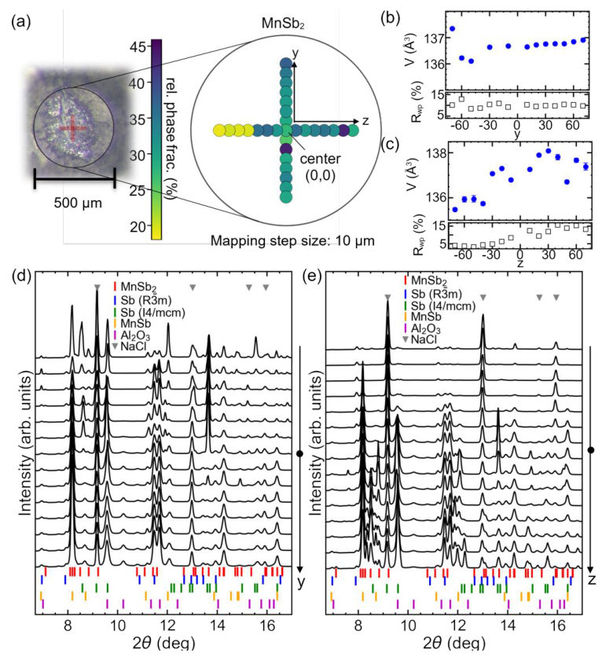
<figcaption class="paper-figure-caption"><b>Fig 1.</b> Fig. 1 Synchrotron powder X-ray diffraction spatial mapping using a cross-scanning strategy. (a) Schematic</figcaption>
</figure>
<figure class="paper-figure-card">
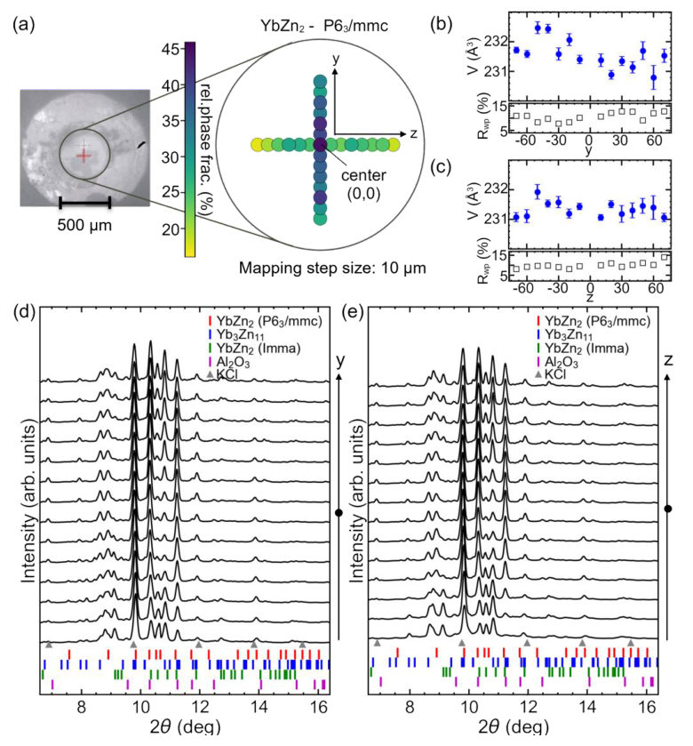
<figcaption class="paper-figure-caption"><b>Fig 2.</b> Fig. 2 Synchrotron powder X-ray diffraction spatial mapping using a cross-scanning strategy. (a) Schematic</figcaption>
</figure>
<figure class="paper-figure-card">
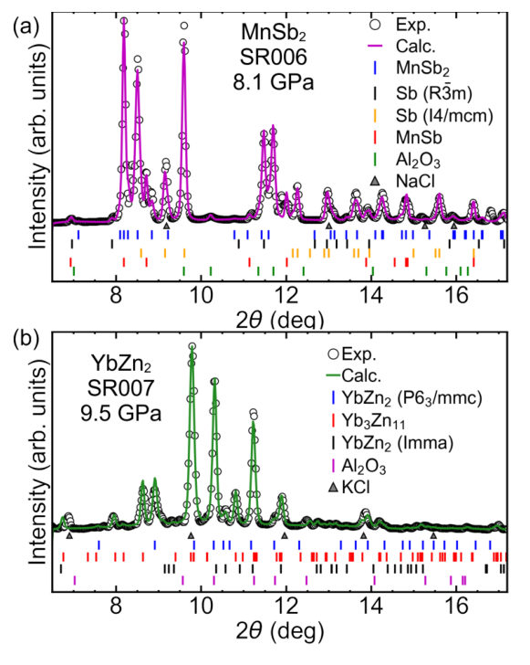
<figcaption class="paper-figure-caption"><b>Fig 3.</b> Fig. 3 Synchrotron PXRD patterns collected from the best phase-purity locations identified in the spatial</figcaption>
</figure>
<figure class="paper-figure-card">
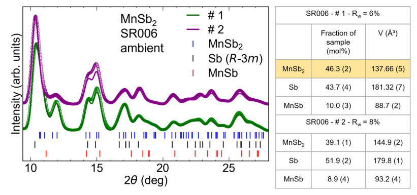
<figcaption class="paper-figure-caption"><b>Fig 4.</b> Fig. 4 Powder X-ray diffraction patterns from two selected recovered MnSb2 pieces measured after</figcaption>
</figure>
<figure class="paper-figure-card">
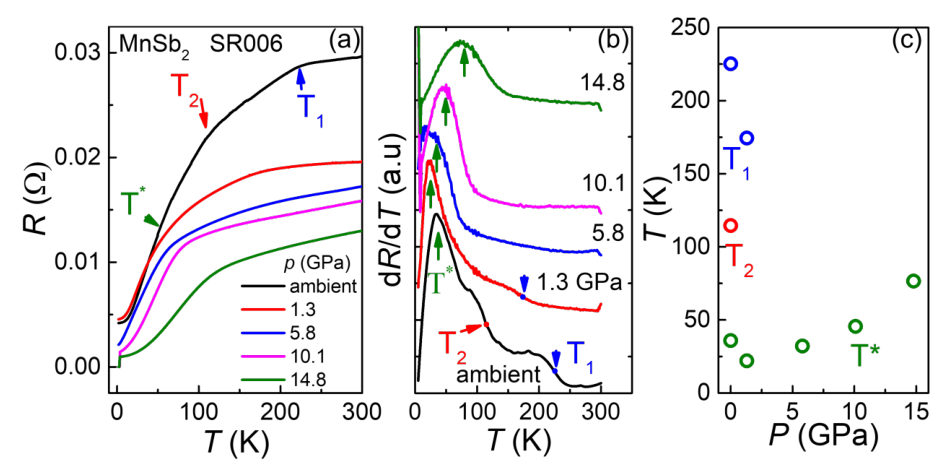
<figcaption class="paper-figure-caption"><b>Fig 5.</b> Fig. 6 (a) Temperature dependence of the resistance R(T) for MnSb2 (SR006, sample #1) at various</figcaption>
</figure>
</div>

<p><strong>Summary.</strong> This work establishes a practical, integrated workflow for synthesizing and characterizing metastable high-pressure phases using Laser-Heated Diamond Anvil Cells. By studying $   ext{MnSb}_2$ and $  ext{YbZn}_2$, the authors demonstrate that these materials exhibit highly tunable electronic and magnetic instabilities governed by pressure. This advances LHDAC from a mere structural discovery tool to a powerful platform for investigating correlated quantum states.</p>
<p><strong>Why it may be interesting.</strong> The ability to probe correlated quantum states (like magnetic or electronic instabilities) in materials synthesized under extreme, non-equilibrium conditions provides a unique experimental playground for testing theories of strongly correlated electron systems.</p>
<details>
<summary>Detailed structure</summary>
<p><strong>Main problem.</strong> The primary challenge addressed is the systematic recovery and post-synthesis physical characterization of metastable intermetallic phases created under extreme, non-equilibrium pressure-temperature conditions using Laser-Heated Diamond Anvil Cells (LHDAC).</p>
<p><strong>Main result.</strong> The authors successfully demonstrated an integrated LHDAC workflow, revealing tunable electronic instabilities in both $   ext{MnSb}_2$ and $  ext{YbZn}_2$, which exhibit pressure-induced changes in magnetic and electronic ground states.</p>
<p><strong>Method.</strong> The study combines LHDAC synthesis with structural characterization via synchrotron X-ray diffraction and detailed transport measurements ($R$ vs. $T$ and $P$) on recovered samples.</p>
<p><strong>Model / system.</strong> The research focuses on metastable intermetallic compounds, specifically $  ext{MnSb}_2$ and $  ext{YbZn}_2$, whose electronic and magnetic properties are investigated when stabilized far from equilibrium thermodynamic conditions.</p>
<p><strong>Key observables.</strong> Electrical resistance ($
ho$), temperature dependence of resistance ($   ext{d}R/    ext{d}T$), magnetic ordering anomalies, and phase fractions derived from XRD.</p>
<p><strong>Important parameters / regimes.</strong> High pressures (up to $\sim 15 	ext{ GPa}$), high temperatures (up to $\sim 3000 	ext{ K}$), and specific pressure thresholds (e.g., $\sim 11 	ext{ GPa}$ for $    ext{YbZn}_2$).</p>
<p><strong>Assumptions / limitations.</strong> The primary limitation acknowledged is the inherent spatial inhomogeneity due to localized laser heating, necessitating careful selection of high-purity sample regions for reliable measurement.</p>
<p><strong>Figures summary.</strong> Figures illustrate the pressure dependence of electrical resistance for $  ext{YbZn}_2$, showing an abrupt transition to semiconducting-like behavior near $11 	ext{ GPa}$, and show the pressure suppression of magnetic anomalies in $   ext{MnSb}_2$.</p>
<p><strong>Paper structure.</strong> The paper follows a structure of problem identification (LHDAC recovery challenge), methodology development (integrated synthesis/recovery workflow), structural confirmation (XRD mapping), and detailed physical characterization (transport measurements on recovered samples).</p>
</details>
<details>
<summary>Abstract</summary>
<p>The creation and exploration of new materials under extreme pressure-temperature conditions has become increasingly reliant on laser-heated diamond anvil cell (LHDAC) techniques, which provide direct access to previously unexplored regions of multinary phase diagrams. Whereas numerous high-pressure phases have been identified in situ, systematic recovery and post-synthesis physical property characterization of these materials remain significant challenges. In this work, we present the development of an integrated LHDAC synthesis and demonstrate a practical LHDAC-based synthesis workflow that enables stabilization and recovery of metastable intermetallic phases for subsequent structural and transport studies. Using this approach, we successfully achieved LHDAC synthesis of high-pressure MnSb2 and YbZn2 phases under moderate pressures. Synchrotron X-ray diffraction and spatial mapping confirm dominant formation of the targeted phases, whereas laboratory-based refinement quantifies phase fractions despite intrinsic microstrain and minor secondary phases. High-pressure transport measurements on recovered samples reveal tunable by pressure electronic instabilities in both systems. In MnSb2, pressure suppresses two high-temperature magnetic ordering anomalies, observed in transport, by 5 GPa and for higher pressures induces a new low-temperature feature that increases with further pressure increase. In hexagonal high-pressure YbZn2, an electronic reconstruction emerges at ~11 GPa, characterized by semiconducting-like behavior from ~ 30 K to 300 K and a broad low-temperature coherence crossover near 30 K. Our results establish LHDAC synthesis not only as a structural discovery tool, but also as an experimental platform for investigating correlated quantum states stabilized far from equilibrium thermodynamic conditions.</p>
</details>
<p><sub><a href="#top">↑ back to top</a></sub></p>

<p><a id="paper-2605.16073"></a></p>
<h3 id="charge-transfer-from-perovskite-quantum-dots-to-multifunctional-ligands-with-tethered-molecular-species"><a href="http://arxiv.org/abs/2605.16073v1">Charge Transfer from Perovskite Quantum Dots to Multifunctional Ligands with Tethered Molecular Species</a></h3>
<p><strong>Authors:</strong> Mariam Kurashvili, Lena S. Stickel, Jordi Llusar, Christian Wilhelm, Fabian Felixberger, Ivana Ivanović-Burmazović, Ivan Infante, Jochen Feldmann, Quinten A. Akkerman<br>
<strong>Type:</strong> both · <strong>Category:</strong> other · <strong>PDF:</strong> <a href="https://arxiv.org/pdf/2605.16073v1">https://arxiv.org/pdf/2605.16073v1</a><br>
<strong>Analysis basis:</strong> full PDF text, analyzed in chunks
<strong>Topic relevance:</strong> <code>Keldysh / 2PI / non-Gaussian methods</code> <strong>1/5</strong> · <code>Kondo &amp; dissipative impurity</code> <strong>1/5</strong> · <code>correlated / nonlocal dissipation</code> <strong>1/5</strong> · <code>driven-dissipative phase transition</code> <strong>1/5</strong> · <code>methods for driven-dissipative</code> <strong>1/5</strong> · <code>non-equilibrium dynamics</code> <strong>1/5</strong></p>
<div class="figure-strip-hint">↔ Scroll figures horizontally</div>
<div class="paper-figures-scroll">
<figure class="paper-figure-card">
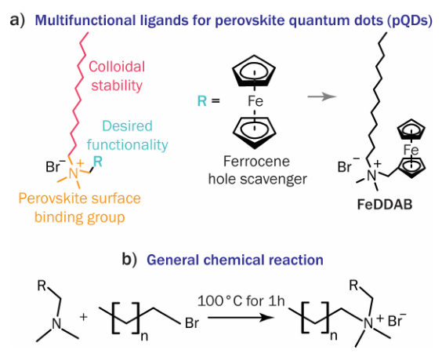
<figcaption class="paper-figure-caption"><b>Fig 1.</b> Figure 1. Synthesis of multifunctional ligands for pQDs. a) Simplified schematic of the multifunctional</figcaption>
</figure>
<figure class="paper-figure-card">

<figcaption class="paper-figure-caption"><b>Fig 2.</b> Figure 2a shows the absorbance, photoluminescence (PL, excited at 3.10 eV) spectra of DDAB-capped</figcaption>
</figure>
<figure class="paper-figure-card">
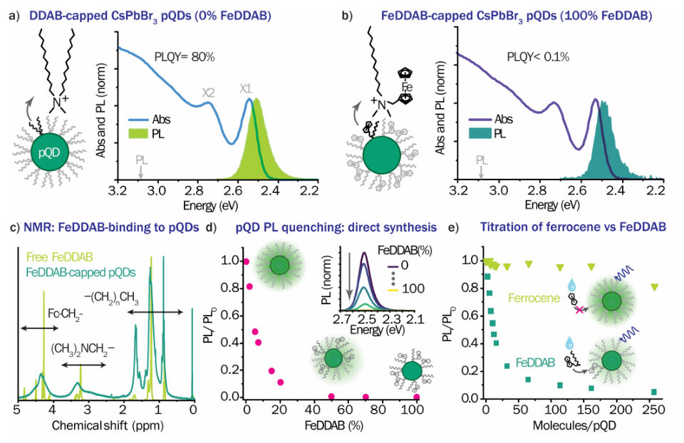
<figcaption class="paper-figure-caption"><b>Fig 3.</b> Figure 2. Excited state interactions and binding between ferrocene functionalized ligands and</figcaption>
</figure>
<figure class="paper-figure-card">
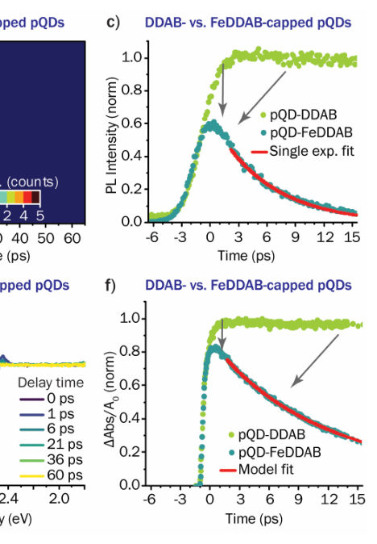
<figcaption class="paper-figure-caption"><b>Fig 4.</b> Figure 3. Time-resolved PL and TA spectra of DDAB- and FeDDAB-capped CsPbBr3 pQDs.</figcaption>
</figure>
<figure class="paper-figure-card">
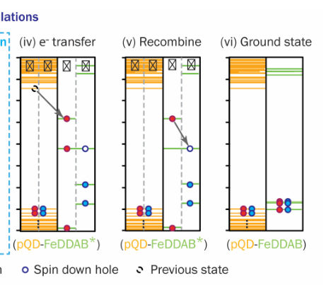
<figcaption class="paper-figure-caption"><b>Fig 5.</b> Figure 4. DFT calculations of excited state interaction between pQD and ferrocene. Energy</figcaption>
</figure>
</div>

<p><strong>Summary.</strong> This research details a strategy to improve the performance of Perovskite Quantum Dots (pQDs) by attaching multifunctional ligands containing redox-active moieties like ferrocene. By combining time-resolved spectroscopy and DFT calculations, the authors demonstrate that these engineered ligands facilitate highly efficient, fast charge transfer processes crucial for developing next-generation photocatalysts and optoelectronic devices.</p>
<p><strong>Why it may be interesting.</strong> The work provides a detailed, mechanism-driven blueprint for controlling interfacial charge dynamics in semiconductor nanocrystals, which is highly relevant to open quantum systems and quantum light sources.</p>
<details>
<summary>Detailed structure</summary>
<p><strong>Main problem.</strong> The primary goal is to enhance charge carrier extraction or injection from Perovskite Quantum Dots (pQDs) for optoelectronic and photocatalytic applications by engineering the surface ligands.</p>
<p><strong>Main result.</strong> The use of multifunctional ligands, particularly those incorporating ferrocene, facilitates fast, high-efficiency photoexcited hole transfer from the pQDs to the tethered molecular species.</p>
<p><strong>Method.</strong> The study combines experimental techniques like time-resolved spectroscopy (PL, TA) with theoretical modeling using Density Functional Theory (DFT) calculations.</p>
<p><strong>Model / system.</strong> The system involves $   ext{CsPbBr}_3$ pQDs functionalized with multifunctional ligands (e.g., $    ext{FeDDAB}$, $ ext{NBODAB}$, $ ext{ADDAB}$). The ligands are designed to possess a strong binding group, a stabilizing tail, and a redox-active functional group.</p>
<p><strong>Key observables.</strong> Hole transfer rate (up to $99.9\%$ efficiency), electron transfer rate ($\sim 15 	ext{ ps}$), Photoluminescence Quantum Yield ($    ext{PLQY}$), and structural reorganization of the redox center.</p>
<p><strong>Important parameters / regimes.</strong> The efficiency is highly dependent on the ligand structure and the ability to maintain a small donor-acceptor distance ($< 1 	ext{ nm}$).</p>
<p><strong>Assumptions / limitations.</strong> The analysis assumes that the ligand engineering strategy successfully controls the electronic coupling and charge transfer pathways, and that DFT accurately models the structural reorganization upon charge transfer.</p>
<p><strong>Figures summary.</strong> Figures illustrate the synthesis of ligands, compare PL spectra of capped pQDs (bright vs. quenched), and show energy band alignments and charge transfer pathways derived from DFT calculations.</p>
<p><strong>Paper structure.</strong> The paper progresses by first establishing the need for advanced ligand design, then presenting spectroscopic evidence (PL/TA) showing rapid charge transfer kinetics, and finally using DFT to model the underlying electronic structure changes and charge separation mechanisms.</p>
</details>
<details>
<summary>Abstract</summary>
<p>Perovskite quantum dots (pQDs) are promising materials for optoelectronic and photocatalytic applications due to their unique optical properties. To enhance charge carrier extraction or injection donor/acceptor molecules can be tethered to the pQD. These molecules must strongly bind to the ionic surfaces of pQDs without compromising colloidal stability. These we achieve by using multifunctional ligands containing a quaternary ammonium binding group for strong pQDs surface attachment, a long tail group for colloidal stability, and a functional group near the pQD surface. Such pQDs with ferrocene-functionalized ligands show fast photoexcited hole transfer with near-unity efficiency. Density functional theory calculations reveal how ferrocene's molecular structure reorganizes following hole transfer, affecting its charge separation efficiency. This approach can also be extended to in photoexcited electron and energy transfer processes with pQDs. Therefore, this strategy offers a blueprint for creating efficient QD-molecular hybrids for applications like photocatalysis.</p>
</details>
<p><sub><a href="#top">↑ back to top</a></sub></p>

<p><a id="paper-2605.16166"></a></p>
<h3 id="rapid-atmospheric-vapor-deposition-of-hin2o3-transparent-conducting-oxide-thin-films"><a href="http://arxiv.org/abs/2605.16166v1">Rapid Atmospheric Vapor Deposition of H:In2O3 Transparent Conducting Oxide Thin Films</a></h3>
<p><strong>Authors:</strong> Xiaoyu Guo, Hae-Jun Seok, Eilidh L. Quinn, Matthew K Sharpe, Callum. D. McAleese, Yi-Teng Huang, Xinjuan Li, Kexue Li, Chia-Yu Chang, Yongjie Wang, John O'Sullivan, Katie L. Moore, Caterina Ducati, Ruy Sebastian Bonilla, Han-Ki Kim, Abderrahime Sekkat, Robert L. Z. Hoye<br>
<strong>Type:</strong> experiment · <strong>Category:</strong> other · <strong>PDF:</strong> <a href="https://arxiv.org/pdf/2605.16166v1">https://arxiv.org/pdf/2605.16166v1</a><br>
<strong>Analysis basis:</strong> full PDF text, analyzed in chunks
<strong>Topic relevance:</strong> <code>analog quantum simulation</code> <strong>1/5</strong> · <code>driven-dissipative phase transition</code> <strong>1/5</strong> · <code>non-equilibrium dynamics</code> <strong>1/5</strong> · <code>non-equilibrium universality</code> <strong>1/5</strong></p>
<div class="figure-strip-hint">↔ Scroll figures horizontally</div>
<div class="paper-figures-scroll">
<figure class="paper-figure-card">
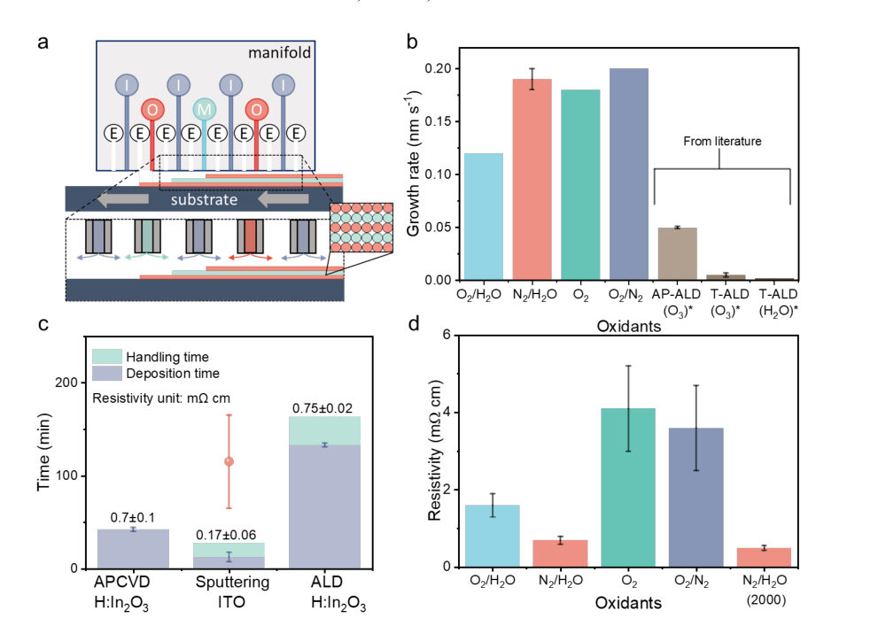
<figcaption class="paper-figure-caption"><b>Fig 1.</b> Figure 1. H:In2O3 grown by atmospheric pressure chemical vapor deposition (AP-CVD), compared with established alternatives. a. Illustration of the gas manifold used for AP-CVD, “M” denotes the metal precursor, “I” denotes the inert gas (N2), “O” denotes the oxidant gas channels and “E” denotes the exhaust channels. The substrate is loaded onto a platen (metal plate), which heats the sample and oscillates it beneath the gas manifold. b. Growth rate of H:In2O3 thin films deposited by AP-CVD with</figcaption>
</figure>
<figure class="paper-figure-card">
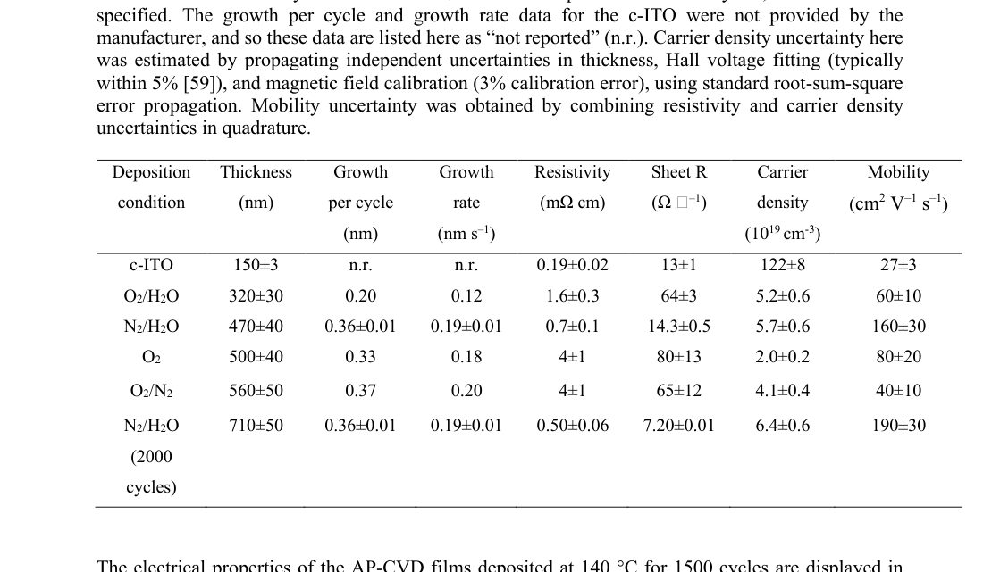
<figcaption class="paper-figure-caption"><b>Fig 2.</b> Figure 1d and Table 1. Films grown with N2/H2O in the oxidant channel exhibited the lowest resistivity</figcaption>
</figure>
<figure class="paper-figure-card">
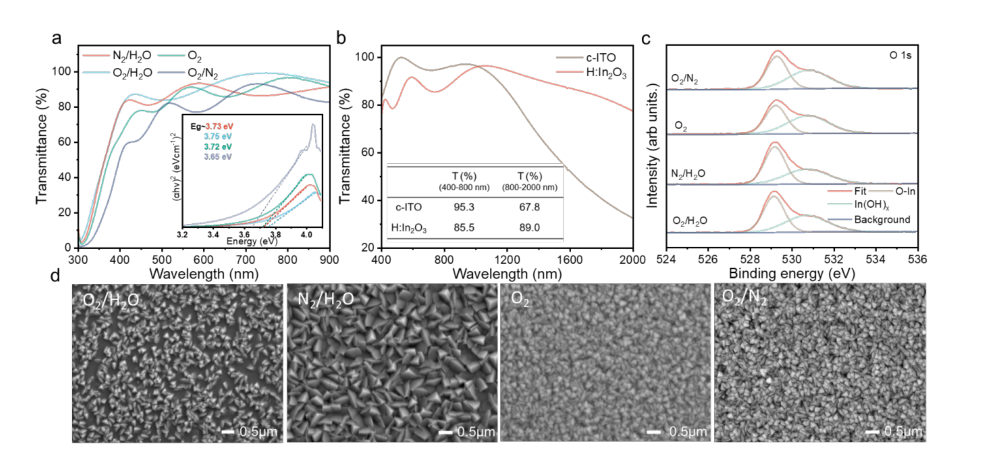
<figcaption class="paper-figure-caption"><b>Fig 3.</b> Figure 2. Effect of oxidant on optical properties, surface chemistry and morphology of AP-CVD H:In2O3 films. a. Transmittance and bandgap of H:In2O3 thin films deposited via AP-CVD at 140 °C for 1500 cycles under various oxidizing environments. The thicknesses of film grown with O2/H2O, N2/H2O, O2 alone and O2/N2 in the oxidant channel are 320±30, 470±40, 500±40, 560±50 nm, respectively. b. Visible-IR transmittance of commercial ITO (150±3 nm thickness) and optimal N2/H2O-grown H:In2O3 thin film (710±50 nm thickness) deposited at 140 °C for 2000 cycles. c. XPS spectra, and d. high-resolution SEM images of H:In2O3 thin films deposited under various oxidizing environments for 1500 cycles.</figcaption>
</figure>
<figure class="paper-figure-card">
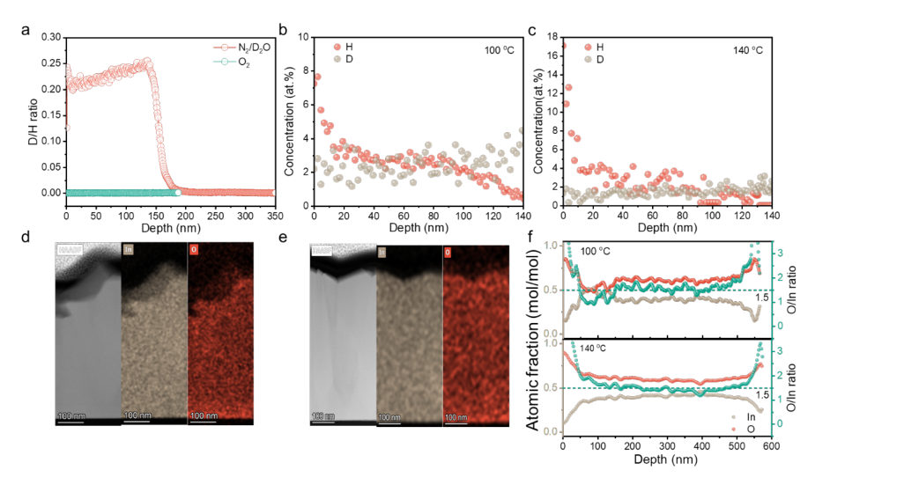
<figcaption class="paper-figure-caption"><b>Fig 4.</b> Figure 3. Understanding the mechanism of H doping in AP-CVD H:In2O3. a. Depth profiles of the D/H ratio in H:In2O3 thin films (thickness ~150 nm) deposited onto Si wafer at 100 °C using N2/D2O or O2-</figcaption>
</figure>
</div>

<p><strong>Summary.</strong> This work introduces Atmospheric Pressure Chemical Vapor Deposition (AP-CVD) as a highly scalable and low-temperature method for creating high-performance Transparent Conducting Oxides ($    ext{H:In}_2 ext{O}_3$). By using water as an oxidant, the researchers significantly boost carrier mobility and NIR transmittance, outperforming established commercial methods and making TCOs compatible with sensitive electronic substrates.</p>
<p><strong>Why it may be interesting.</strong> While primarily materials science, the control over defect states (oxygen vacancies) via chemical doping ($  ext{H}$ incorporation) and the comparison of different deposition kinetics (CVD vs. ALD) touches upon non-equilibrium thermodynamics and defect physics relevant to open quantum systems.</p>
<details>
<summary>Detailed structure</summary>
<p><strong>Main problem.</strong> The paper addresses the need for cost-effective, rapid, and low-temperature methods to deposit high-performance Transparent Conducting Oxides (TCOs) that can be compatible with sensitive materials like perovskites.</p>
<p><strong>Main result.</strong> Atmospheric Pressure Chemical Vapor Deposition (AP-CVD) successfully synthesizes hydrogen-doped $  ext{In}_2   ext{O}_3$ films that surpass commercial sputter-deposited ITO in performance, achieving high mobility and superior Near-Infrared (NIR) transmittance.</p>
<p><strong>Method.</strong> The study uses AP-CVD under mild, atmospheric conditions, systematically varying the oxidant chemistry ($   ext{O}_2$ vs. $ ext{H}_2    ext{O}$) and employing advanced characterization techniques like ToF-ERDA, XPS, and Nano-SIMS.</p>
<p><strong>Model / system.</strong> The physical system is the deposition of $  ext{H:In}_2 ext{O}_3$ thin films using a close-proximity SALD reactor operating in CVD mode. The process is compared against high-vacuum methods like sputtering and slow methods like ALD.</p>
<p><strong>Key observables.</strong> Sheet resistance ($    ext{7.20}\pm0.01    ext{ } \Omega \square^{-1}$), NIR transmittance ($   ext{up to } 89\%$), carrier mobility ($ ext{up to } 160\pm30    ext{ cm}^2  ext{ V}^{-1}    ext{ s}^{-1}$), and depth-dependent $   ext{D/H}$ ratios.</p>
<p><strong>Important parameters / regimes.</strong> Low processing temperature ($   ext{140 }^\circ ext{C}$), high growth rate ($   ext{40x}$ higher than ALD), and the oxidant source ($   ext{H}_2    ext{O}$ vs. $   ext{O}_2$).</p>
<p><strong>Assumptions / limitations.</strong> The improved electrical properties are attributed to hydrogen dopants passivating oxygen vacancies, which act as carrier scattering centers.</p>
<p><strong>Figures summary.</strong> Figures illustrate the AP-CVD setup, comparisons of growth rates and process times against ALD/sputtering, and optical transmittance spectra showing superior NIR performance compared to sputtered ITO.</p>
<p><strong>Paper structure.</strong> The paper progresses by establishing the limitations of existing TCO deposition methods, presenting the AP-CVD technique, demonstrating superior electrical/optical performance using $    ext{H}_2    ext{O}$ oxidants, and finally using advanced spectroscopy (SIMS, ToF-ERDA) to confirm the role of hydrogen doping in enhancing material quality.</p>
</details>
<details>
<summary>Abstract</summary>
<p>Transparent conducting oxides (TCOs) are essential for the optoelectronics industry, but there is a critical gap in cost-effective methods to rapidly deposit low sheet resistance, high transmittance films without damaging delicate materials, including emerging soft semiconductors like metal-halide perovskites. In this work, atmospheric pressure chemical vapor deposition (AP-CVD) is used to synthesise H:In2O3 films with 7.20+/-0.01 Ohm/sq sheet resistance (0.50+/-0.06 mOhm.cm resistivity) and transmittance up to 89% in the near-infrared (NIR), surpassing commercial sputter-deposited indium tin oxide. The growth rate is 40x higher than atomic layer deposition (ALD), and the AP-CVD films are fully processed under atmospheric conditions at only 140 C. Comparison of secondary ion mass spectrometry and time-of-flight elastic recoil detection analysis with changes in carrier concentration indicate that H dopants are introduced from the water oxidant. There is an increase in mobility form 40+/-10 cm2/Vs to 160+/-30 cm2/Vs when changing from O2 to H2O as the oxidant, which is attributed to H dopants passivating oxygen vacancies that act as carrier scattering centers. This work establishes AP-CVD as a promising method for manufacturing high figure-of-merit TCOs in a rapid, scalable and cost-effective manner, using mild growth conditions compatible with thermally-sensitive materials.</p>
</details>
<p><sub><a href="#top">↑ back to top</a></sub></p>

<p><a id="paper-2605.15981"></a></p>
<h3 id="orbital-angular-momentum-textures-and-currents-in-a-discrete-helix-equilibrium-and-linear-response"><a href="http://arxiv.org/abs/2605.15981v1">Orbital Angular Momentum Textures and Currents in a Discrete Helix: Equilibrium and Linear Response</a></h3>
<p><strong>Authors:</strong> Danny Cordova, Bertrand Berche, Ernesto Medina<br>
<strong>Type:</strong> theory · <strong>Category:</strong> other · <strong>PDF:</strong> <a href="https://arxiv.org/pdf/2605.15981v1">https://arxiv.org/pdf/2605.15981v1</a><br>
<strong>Analysis basis:</strong> full PDF text, analyzed in chunks
<strong>Topic relevance:</strong> <code>Frenkel-Kontorova</code> <strong>1/5</strong> · <code>analog quantum simulation</code> <strong>1/5</strong> · <code>spintronics-quantum-optics interface</code> <strong>1/5</strong></p>
<div class="figure-strip-hint">↔ Scroll figures horizontally</div>
<div class="paper-figures-scroll">
<figure class="paper-figure-card">
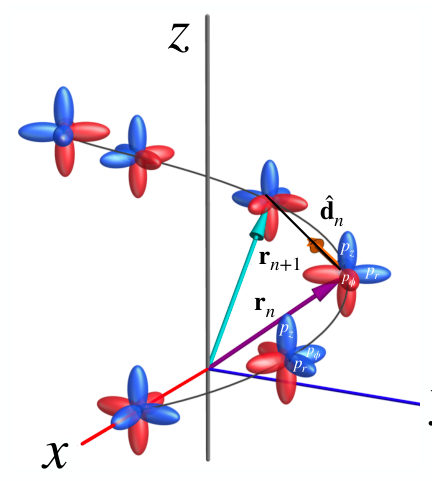
<figcaption class="paper-figure-caption"><b>Fig 1.</b> FIG. 1. (Color online). Model of the helix with the nearest neighbor sites rn and rn+1. The included orbitals per site are pr, pϕ, pz as depicted. The vector ˆdn joins two adjacent sites. The orientation chosen for the orbital corresponds to a single strand DNA like structure.</figcaption>
</figure>
<figure class="paper-figure-card">
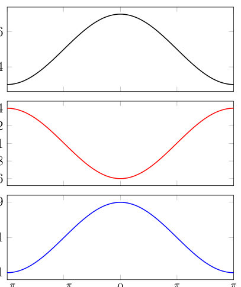
<figcaption class="paper-figure-caption"><b>Fig 2.</b> FIG. 2. Band structure of the reduced trz-only model. The azimuthal band Eϕ(k) (online black) remains fully de- coupled, while the pr −pz sector hybridizes through the odd- in-momentum coupling Yk, yielding the split branches E+(k) (online red) and E−(k) (online blue). The parameters used are reported in the appendix.</figcaption>
</figure>
<figure class="paper-figure-card">
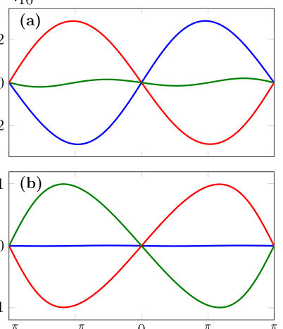
<figcaption class="paper-figure-caption"><b>Fig 3.</b> FIG. 3. Exact local orbital angular momentum textures for the fully hybridized 3 × 3 helical Hamiltonian. (a) Azimuthal texture ⟨Lϕ⟩generated primarily by the pr −pz coherence. (b) Longitudinal texture ⟨Lz⟩generated primarily by the pr −pϕ coherence. The textures corresponding to the low- est energy band E1 (online blue), the middle energy band E2 (online red), and the highest energy band E3 (online green) are shown. The texture for the radial angular moment is al- ways zero within the single helix model presented here.</figcaption>
</figure>
<figure class="paper-figure-card">
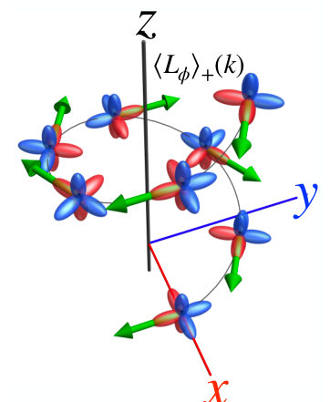
<figcaption class="paper-figure-caption"><b>Fig 4.</b> FIG. 4. Orbital angular momentum textures given by Eq.63. for this case we only have a ⟨Lϕ⟩(k) due to the coherence of pz and pr orbitals. The length of the orbital angular momentum vector (online green) depends on k and is odd under k →−k.</figcaption>
</figure>
<figure class="paper-figure-card">
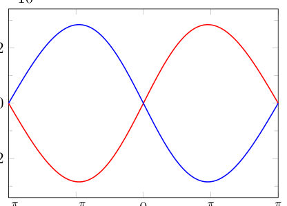
<figcaption class="paper-figure-caption"><b>Fig 5.</b> FIG. 5. Azimuthal Orbital Angular Momentum Texture ⟨Lϕ⟩ generated by the (pz, pr) sector. The texture generated by E+ (online red) has the same shape as the texture generated by E−(online blue), but with the opposite sign.</figcaption>
</figure>
</div>

<p><strong>Summary.</strong> This work demonstrates that intrinsic chirality in a 1D helical structure is sufficient to generate orbital angular momentum textures using only orbital hybridization, bypassing the need for atomic spin-orbit coupling. The theory predicts a finite orbital Edelstein response and a robust orbital-to-spin transduction mechanism for generating spin polarization. This establishes chirality as a minimal ingredient for controlling spin selectivity in chiral conductors.</p>
<p><strong>Why it may be interesting.</strong> The finding that chirality itself can generate robust OAM responses and mediate spin polarization via orbital overlap scales, bypassing the need for strong intrinsic SOC, is highly relevant for understanding spin-charge conversion in low-dimensional quantum materials.</p>
<details>
<summary>Detailed structure</summary>
<p><strong>Main problem.</strong> The paper investigates the generation and control of orbital angular momentum (OAM) textures and currents in low-dimensional, chiral systems.</p>
<p><strong>Main result.</strong> Chirality alone generates a momentum-dependent OAM texture without needing atomic spin-orbit coupling, leading to a finite orbital Edelstein response and a mechanism for spin polarization stronger than conventional SOC effects.</p>
<p><strong>Method.</strong> The study employs a minimal three-orbital tight-binding model solved using Bloch wavevector analysis to calculate expectation values of local angular momentum operators.</p>
<p><strong>Model / system.</strong> The system is a single helical chain modeled by a three-orbital tight-binding Hamiltonian using a local basis $\{p_r, p_\phi, p_z\}$. The hopping terms are derived from Slater-Koster hybridization rules based on the helical geometry.</p>
<p><strong>Key observables.</strong> Orbital angular momentum texture components ($\langle L_r 
angle, \langle L_\phi 
angle, \langle L_z 
angle$), orbital Edelstein response ($\chi_L$), and induced spin polarization ($\delta S$).</p>
<p><strong>Important parameters / regimes.</strong> Chirality ($\eta$), longitudinal electric field ($E_\parallel$), and the orbital overlap scales relative to the bare SOC scale.</p>
<p><strong>Assumptions / limitations.</strong> The analysis relies on a minimal three-orbital tight-binding approximation and uses linear response theory for the electric field application.</p>
<p><strong>Figures summary.</strong> Figures illustrate the helical model, the momentum-dependent orbital texture $\langle L_\phi 
angle(k)$ in the $  ext{pr}-    ext{pz}$ sector, and the accumulation of orbital angular momentum at the helix termination.</p>
<p><strong>Paper structure.</strong> The paper systematically analyzes the OAM texture generation (equilibrium vs. linear response), details the orbital-to-spin transduction mechanism, and contrasts the resulting spin response with conventional SOC mechanisms.</p>
</details>
<details>
<summary>Abstract</summary>
<p>Recently, nonequilibrium orbital angular momentum in low-dimensional systems has attracted renewed attention. Here we introduce a minimal three-orbital tight-binding model for a single helical chain and show that chirality alone generates a momentum-dependent orbital-angular-momentum texture through Slater--Koster hybridization in the local basis $(p_r,p_φ,p_z)$, without requiring atomic spin--orbit coupling. In the single-helix geometry, the radial orbital texture vanishes identically, while the azimuthal and longitudinal components remain finite and arise from the odd-in-momentum $(p_z,p_r)$ and $(p_r,p_φ)$ sectors. As a result, the equilibrium average orbital texture vanishes by parity, although persistent-like orbital angular momentum currents may still exist and imply chirality-dependent end magnetization in a finite helix. Under an applied longitudinal electric field, the system develops a finite orbital Edelstein response, whereas the projected longitudinal orbital-current conductivity vanishes in the linear regime by parity. When spin degrees of freedom are included, the orbital texture acts as a source of spin polarization through orbital-to-spin transduction. The resulting spin response is controlled by orbital overlap scales much larger than the bare relativistic spin--orbit scale, making it a stronger candidate for spin injection than the conventional spin Edelstein mechanism. These results identify chirality as the minimal microscopic ingredient for generating orbital angular momentum response in one-dimensional systems and support an orbital route to spin selectivity in chiral conductors.</p>
</details>
<p><sub><a href="#top">↑ back to top</a></sub></p>

<p><a id="paper-2605.16061"></a></p>
<h3 id="transport-signatures-of-valley-polarization-in-graphene-multilayers-in-plane-linear-magnetoconductivity-vs-anomalous-hall-effect"><a href="http://arxiv.org/abs/2605.16061v1">Transport signatures of valley polarization in graphene multilayers: In-plane linear magnetoconductivity vs anomalous Hall effect</a></h3>
<p><strong>Authors:</strong> Fernando Peñaranda, Fernando de Juan<br>
<strong>Type:</strong> theory · <strong>Category:</strong> strongly correlated electrons · <strong>PDF:</strong> <a href="https://arxiv.org/pdf/2605.16061v1">https://arxiv.org/pdf/2605.16061v1</a><br>
<strong>Analysis basis:</strong> full PDF text, analyzed in chunks
<strong>Topic relevance:</strong> <code>Keldysh / 2PI / non-Gaussian methods</code> <strong>1/5</strong> · <code>analog quantum simulation</code> <strong>1/5</strong> · <code>non-equilibrium dynamics</code> <strong>1/5</strong></p>
<div class="figure-strip-hint">↔ Scroll figures horizontally</div>
<div class="paper-figures-scroll">
<figure class="paper-figure-card">
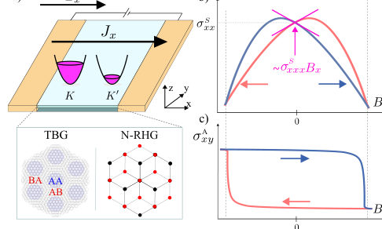
<figcaption class="paper-figure-caption"><b>Fig 1.</b> FIG. 1. (a) Sketch of the proposed two-contacts measure- ment setup for the observation of in-plane LMC. In a valley- polarized state, where the Fermi-surface pockets exhibit un- equal fillings (depicted in pink), an in-plane magnetic field Bx results in a time-odd σS xxx correction to σS xx. The in- set depicts two representative systems studied in this work: TBG and N-layer RG belonging to class II and III in Ta- ble I, respectively, whose symmetries in the presence of VP enable a finite in-plane response. (b-c) Schematic showing the two symmetry-nonequivalent dominant hysteresis effects that serve as transport probes of TRS breaking due to (b) the in-plane LMC and (c) the standard AHE,...</figcaption>
</figure>
<figure class="paper-figure-card">
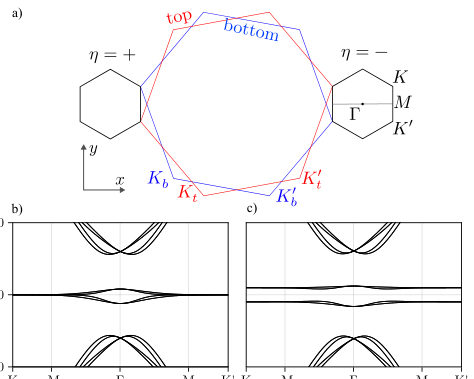
<figcaption class="paper-figure-caption"><b>Fig 2.</b> FIG. 2. (a) Sketch of the moir´e Brillouin zone of TBG. (b,c) Bandstructures of the non-interacting THFM model of TBG with ∆= 0 (c) and ∆̸= 5 meV (c). Parameters: M = 5 meV, v⋆= −7 eV˚A, v′ ⋆= 2 eV˚A,γ = −30 meV.</figcaption>
</figure>
<figure class="paper-figure-card">

<figcaption class="paper-figure-caption"><b>Fig 3.</b> FIG. 4. (a) Illustration of the real space Chern mosaic profile in TBG owing to random sublattice polarization in a ground state with spontaneous valley polarization. ⟨σz⟩(x, y) is over- laid on top of the moir´e lattice with different colors indicating opposite signs. (b) Self-consistent bands of a valley-polarized ground state at ν = 2.5 in the presence of a sublattice poten- tial ∆̸= 0 of arbitrary sign (same parameters as in Fig 3b). Different linestyles indicate different valleys. This regime fea- tures a finite LMC response, while the QAHE averages to zero. Same parameters as in Fig. 3.</figcaption>
</figure>
<figure class="paper-figure-card">

<figcaption class="paper-figure-caption"><b>Fig 4.</b> FIG. 3. LMC in the interacting SSB states of TBG on a substrate (∆ ̸= 0). (a,b) k-resolved Fermi surfaces at ν = 2.5 showing two energetically-degenerate ground states of the Hartre-Fock THFM featuring preserved (a) and spontaneously-broken C2y owing to valley polarization (b). (c) Evolution of valley polarization as a function of filling for the two degenerate solutions. Black and pink denote the absence or presence of valley polarization, and the squares in- dicate ν values at which the Fermi surfaces in (a,b) were com- puted. (d) Ratio in percentage of σS xxxBx/σS xx as a function of filling. The gray shadow in (c,d) delimitates a filling region with exact valley symmetry for one of the...</figcaption>
</figure>
<figure class="paper-figure-card">

<figcaption class="paper-figure-caption"><b>Fig 5.</b> FIG. 5. Non-interacting Koshino-McCann model. (a) Sketch of the device consisting of N-layers ABC stacked with intra and interlayer hopping parameters γi with i ∈{1, 2, 3, 4}. (b- f) Bandstructures for N = {3, 4, 5, 6, 7} layers with: γ0 = 3.16 eV, γ1 = 0.39 eV, γ2 = −0.02eV , γ3 = 0.315 eV, and γ4 = 0. Solid and dashed lines correspond to the two different valleys at K±. The Ez-induced potential ∆= 2 meV gaps the spectrum.</figcaption>
</figure>
</div>

<p><strong>Summary.</strong> This theoretical work establishes that in 2D graphene multilayers, the in-plane linear magnetoconductivity (LMC) serves as a superior and complementary diagnostic tool to the Anomalous Hall Effect (AHE) for detecting spontaneous valley polarization. By performing detailed symmetry and transport calculations, the authors show that LMC remains finite even when AHE vanishes, providing a pathway to characterize exotic correlated electronic states.</p>
<p><strong>Why it may be interesting.</strong> The development of LMC as a robust, symmetry-protected diagnostic tool for intrinsic electronic order (like valley polarization) is highly relevant to understanding emergent quantum states in low-dimensional materials, which often exhibit complex many-body physics.</p>
<details>
<summary>Detailed structure</summary>
<p><strong>Main problem.</strong> The paper investigates how to reliably probe spontaneous valley polarization (VP) in 2D graphene multilayers, especially when the standard diagnostic, the Anomalous Hall Effect (AHE), might vanish due to symmetry.</p>
<p><strong>Main result.</strong> In-plane linear magnetoconductivity (LMC) is proposed as a unique and faithful alternative probe for VP, as it remains finite even when AHE is suppressed by symmetry or disorder.</p>
<p><strong>Method.</strong> The study employs symmetry analysis using point group theory and semiclassical transport calculations (Boltzmann formalism) to derive and compare the theoretical expressions for LMC and AHE.</p>
<p><strong>Model / system.</strong> The focus is on graphene multilayers, including Twisted Bilayer Graphene (TBG) and rhombohedral graphene (RG), modeled using continuum Hamiltonians like the Koshino-McCann model, incorporating electron-electron interactions.</p>
<p><strong>Key observables.</strong> In-plane linear magnetoconductivity ($\sigma_{Sxxx}$), Anomalous Hall Effect ($\sigma_{Axy}$), and the degree of valley polarization ($\langle	au_z
angle$).</p>
<p><strong>Important parameters / regimes.</strong> Magnetic field strength ($B$), layer number ($N$), and the strength of substrate-induced symmetry breaking ($\Delta$).</p>
<p><strong>Assumptions / limitations.</strong> The analysis relies on semiclassical transport theory, the length-gauge formalism for position operators, and approximations regarding the ensemble (canonical vs. grand canonical).</p>
<p><strong>Figures summary.</strong> Figures illustrate bandstructures, phase diagrams showing the competition between different correlated phases (e.g., VPHM vs. SPHM), and quantitative comparisons of LMC vs. AHE responses across various doping levels and layer numbers.</p>
<p><strong>Paper structure.</strong> The paper progresses from establishing the physical problem (VP detection) to a detailed symmetry classification of transport responses (LMC vs. AHE). It then develops the theoretical framework using semiclassical transport and applies it to specific systems like TBG and RG, culminating in a comparative analysis of the two diagnostic tools.</p>
</details>
<details>
<summary>Abstract</summary>
<p>In two-dimensional materials where interacting Fermi pockets occur in valleys related by time-reversal symmetry, a spontaneous valley imbalance results in a novel state known as an orbital magnet. Due to the breaking of time-reversal symmetry, this state can be probed in transport experiments by the violation of Onsager relations, most often done through the anomalous Hall effect (AHE). Here we propose that odd-in-field, in-plane linear magnetoconductivity (LMC) is an alternative probe of valley polarization which can occur even when the AHE vanishes. In multilayer structures, the effect originates from in-plane orbital moments and Berry curvatures enabled by interlayer tunneling and dominates over the spin response. After a classification of many recently studied multilayers, we focus on two valley polarized examples: twisted bilayer graphene, where LMC is finite but the AHE vanishes unless additional symmetry breaking from the substrate is present, and rhombohedral graphene multilayers, where LMC and AHE both track valley polarization because they have the same symmetry. Using self-consistent Hartree-Fock and semiclassical transport calculations, we present detailed predictions of LMR for these two examples and analyze the implications for recent experiments.</p>
</details>
<p><sub><a href="#top">↑ back to top</a></sub></p>

<p><a id="paper-2605.16214"></a></p>
<h3 id="bridging-atomistic-simulation-and-experimental-processing-timescales-with-goal-directed-deep-reinforcement-learning"><a href="http://arxiv.org/abs/2605.16214v1">Bridging Atomistic Simulation and Experimental Processing Timescales with Goal-Directed Deep Reinforcement Learning</a></h3>
<p><strong>Authors:</strong> Wonseok Jeong, Francesca Tavazza, Brian DeCost<br>
<strong>Type:</strong> theory · <strong>Category:</strong> disordered systems and neural networks · <strong>PDF:</strong> <a href="https://arxiv.org/pdf/2605.16214v1">https://arxiv.org/pdf/2605.16214v1</a><br>
<strong>Analysis basis:</strong> full PDF text, analyzed in chunks
<strong>Topic relevance:</strong> <code>methods for driven-dissipative</code> <strong>1/5</strong> · <code>non-equilibrium dynamics</code> <strong>1/5</strong></p>
<div class="figure-strip-hint">↔ Scroll figures horizontally</div>
<div class="paper-figures-scroll">
<figure class="paper-figure-card">

<figcaption class="paper-figure-caption"><b>Fig 1.</b> Figure 1: Overview of REALIZE, the E(3)-equivariant deep reinforcement learning framework. The environment is a Si/a-SiO2 configuration containing an O2 agent. At each step, the current atomistic configuration is encoded into actor and critic representations using a SevenNet backbone together with an environmental multipole. The policy network proposes a rigid-body update of the O2 molecule, parameterized by translation direction, translation magnitude, and bond-axis orientation. The proposed rigid-body move is applied, after which the rigid-body constraint is released and the structure is relaxed on a reactive ReaxFF potential energy surface. The resulting transition is evaluated through...</figcaption>
</figure>
<figure class="paper-figure-card">

<figcaption class="paper-figure-caption"><b>Fig 2.</b> Figure 2: State representation used by the actor and critic. For the actor, O-centered equivariant embeddings from the SevenNet backbone are combined into a symmetric channel, SYM = 1</figcaption>
</figure>
<figure class="paper-figure-card">

<figcaption class="paper-figure-caption"><b>Fig 3.</b> Figure 3: Autoregressive action generation in the policy network. The policy first samples a translation direction ˆd on S2. The equivariant features are then rotated into a local frame whose z-axis is aligned with the sampled direction. From this aligned representation, a forward-looking radial embedding is constructed and used together with aligned scalar features to predict the translation magnitude. In parallel, the O–O axis head predicts the directed bond orientation conditioned on the same sampled direction. This autoregressive design factorizes the action as p(ˆd, s, ˆb) = p(ˆd) p(s | ˆd) p(ˆb | ˆd) and reflects the physical coupling between where the molecule moves, how far it...</figcaption>
</figure>
<figure class="paper-figure-card">

<figcaption class="paper-figure-caption"><b>Fig 4.</b> Figure 4: Dissociation detection and verification mechanism. After each accepted step, the environment first checks whether the O–O distance exceeds an initial geometric threshold. If not, an auxiliary oxidation criterion based on the local increase in Si oxidation state near the oxygen atoms is evaluated. A step is flagged as an initial dissociation candidate if either criterion is satisfied. Candidate events are then subjected to short molecular-dynamics verification followed by minimization. Dissociation is accepted only if the O–O distance remains above the stricter final threshold after this verification protocol. This multi-stage procedure rejects transient bond stretching and other...</figcaption>
</figure>
<figure class="paper-figure-card">

<figcaption class="paper-figure-caption"><b>Fig 5.</b> Figure 5: Training dynamics. (a)–(c) Per-head policy convergence diagnostics for direction, magnitude, and axis components of the autoregressive action distribution. PPO clip fractions are reported on the left axis of each panel. Per-head behavioural quantities, including entropy, mean step size ⟨r⟩with ±1σ band, and the ∥τ∥correction from the geometric prior, are reported on the right axis. (d) Episode outcomes, showing rolling rates of MD-verified dissociation (blue) and O2 escape to vacuum (red), with per-episode markers along the top and bottom edges. (e) Activation-energy reward REa per episode, shown as blue points for dissociation-verified episodes only, together with rolling means...</figcaption>
</figure>
</div>

<p><strong>Summary.</strong> This work introduces a novel deep reinforcement learning framework to overcome the timescale gap in atomistic simulations of material processing. By treating the reactive species ($  ext{O}_2$) as an agent, the model learns to discover kinetically favorable, low-barrier pathways for oxidation in disordered $  ext{Si}/    ext{a-SiO}_2$ environments. This advances the field by providing a mechanism to simulate complex chemical transformations inaccessible to conventional molecular dynamics.</p>
<p><strong>Why it may be interesting.</strong> The integration of deep reinforcement learning with atomistic simulations to overcome kinetic barriers is highly relevant for modeling non-equilibrium processes in quantum materials, providing a pathway to simulate complex, slow chemical reactions.</p>
<details>
<summary>Detailed structure</summary>
<p><strong>Main problem.</strong> The primary bottleneck in atomistic simulation is simulating material formation under realistic, long-timescale processing conditions, which are governed by rare events in complex, disordered environments.</p>
<p><strong>Main result.</strong> The proposed framework successfully discovers kinetically favorable oxygen diffusion and dissociation pathways in amorphous silicon dioxide, demonstrating progress in accessing previously inaccessible reaction regimes.</p>
<p><strong>Method.</strong> The authors developed an E(3)-equivariant deep reinforcement learning (RL) framework that guides an agent ($    ext{O}_2$ molecule) to perform goal-directed, barrier-aware movements within the atomic environment.</p>
<p><strong>Model / system.</strong> The benchmark system is silicon dry oxidation ($    ext{Si}/    ext{a-SiO}_2$ interface), where the $   ext{O}_2$ molecule acts as the agent. The simulation utilizes reactive force fields (ReaxFF) and incorporates $ ext{E}(3)$ equivariance to ensure physical consistency.</p>
<p><strong>Key observables.</strong> Effective activation barrier ($E_{a, 	ext{eff}}$), $  ext{O}_2$ dissociation success rate, interface roughness ($R_q$), and dangling-bond density.</p>
<p><strong>Important parameters / regimes.</strong> Temperature ($1000 	ext{ K}$), $    ext{O}_2$ molecule rigid-body translation/rotation, and the RL reward function balancing chemical progress and barrier height.</p>
<p><strong>Assumptions / limitations.</strong> The RL trajectories are interpreted as low-barrier pathways rather than direct time evolution, and the use of ReaxFF for relaxation introduces potential inaccuracies.</p>
<p><strong>Figures summary.</strong> Figures illustrate the RL framework components, showing the agent's action space (rigid-body updates) and the combination of rewards based on chemical success and barrier estimates.</p>
<p><strong>Paper structure.</strong> The paper first identifies the simulation gap, then introduces the REALIZE RL framework, details the $ ext{E}(3)$-equivariant action space factorization, applies it to the $  ext{Si}/    ext{a-SiO}_2$ benchmark, and concludes by discussing the physical interpretation of the discovered pathways.</p>
</details>
<details>
<summary>Abstract</summary>
<p>Atomic-scale modeling has advanced rapidly through integration of machine learning, yet a key bottleneck remains. Even with an accurate potential energy surface and a clear target material, we still lack a practical atomistic dynamics framework that can simulate how materials form under realistic synthesis and processing conditions. Many processing transformations are governed by rare events in non-idealized evolving environments, while direct molecular dynamics is limited by femtosecond timesteps and short accessible trajectories. Existing acceleration methods often require prior mechanistic knowledge, including reaction coordinates, collective variables, event tables, or pathway guesses, which is rarely available in real experiments. Here we present an E(3)-equivariant deep reinforcement learning framework that enables goal-directed pathway discovery without hand-crafted reaction coordinates. The framework introduces a complementary operating mode for atomistic simulation in which realistic, non-idealized environments can be addressed directly while retaining kinetic plausibility through barrier-aware rewards. As a challenging benchmark, we target silicon dry oxidation, where rare-event pathways in amorphous SiO2 are effectively inaccessible to conventional atomistic methods. We treat an O2 molecule as an agent that performs continuous rigid-body translations and rotations in a Si/a-SiO2 environment. The agent is trained with an episode-level objective that rewards verified O2 dissociation while preferring low effective activation barriers. We demonstrate that the learned policy discovers kinetically favorable O2 diffusion and dissociation pathways in a disordered Si/a-SiO2 environment, progressively improving success rate while reducing effective activation barriers over training. We also discuss how the approach can be generalized to other processing and synthesis problems.</p>
</details>
<p><sub><a href="#top">↑ back to top</a></sub></p>

<p><a id="paper-2605.15751"></a></p>
<h3 id="equidistant-resonance-jumps-in-superconducting-coplanar-resonators-driven-by-abrikosov-vortices"><a href="http://arxiv.org/abs/2605.15751v1">Equidistant resonance jumps in superconducting coplanar resonators driven by Abrikosov vortices</a></h3>
<p><strong>Authors:</strong> Dmitrii S. Kalashnikov, Denis Yu. Vodolazov, Ruslan I. Kinzibaev, Andrei G. Shishkin, Vasily S. Stolyarov<br>
<strong>Type:</strong> experiment · <strong>Category:</strong> other · <strong>PDF:</strong> <a href="https://arxiv.org/pdf/2605.15751v1">https://arxiv.org/pdf/2605.15751v1</a><br>
<strong>Analysis basis:</strong> full PDF text, analyzed in chunks
<strong>Topic relevance:</strong> <code>driven-dissipative phase transition</code> <strong>1/5</strong> · <code>spintronics-quantum-optics interface</code> <strong>1/5</strong></p>
<div class="figure-strip-hint">↔ Scroll figures horizontally</div>
<div class="paper-figures-scroll">
<figure class="paper-figure-card">

<figcaption class="paper-figure-caption"><b>Fig 1.</b> FIG. 1. Sample A. (a) Design of the chip layout with six capacitively coupled (notch-type) quarter-wave coplanar res- onators. The inset shows optical image of the resonator sec- tion. (b) Broadband transmission S21(f) showing six reso- nance dips. (c,d) Representative resonance dips for resonators #1 and #3 together with fits by an asymmetric Lorentzian line shape [33].</figcaption>
</figure>
<figure class="paper-figure-card">

<figcaption class="paper-figure-caption"><b>Fig 2.</b> FIG. 2. Magnetic-field dependence of resonator #3. (a,b) Color maps of the transmission amplitude |S21| as a function of the probe frequency and the applied perpendicular field. The frequency axis is plotted relative to the zero-field resonance f0 = 3.832 GHz (horizontal gray dashed line). Resonance frequency fr (c,d) and internal quality factor Qi (e,f) extracted from line-shape fits during a full hysteresis cycle: sweeping from 0 to −Hmax, then to +Hmax, and back to 0. Arrows and colors indicate the sweep direction starting with the red curves. The color maps in (a,b) correspond to the orange lines shown in the subsequent panels. The black dashed curve is a parabolic fit to the low-field...</figcaption>
</figure>
<figure class="paper-figure-card">

<figcaption class="paper-figure-caption"><b>Fig 3.</b> FIG. 3. Equidistant jumps in the resonance frequency. Panels (a) and (b) show the dependence of the resonant frequency on the magnetic field for the fundamental (λ/4) mode of resonators #1 and #3 correspondingly. Panels (c) and (d) present behavior of the additional inductance in magnetic field calculated from the frequency change. Arrows indicate the magnetic field sweep direction. The data in panel (b) correspond to a segment of the plot in Fig. 2 (d). Color-coded markers denote data points following a sharp frequency jump. Panel (e) plots, using markers, the magnetic field value at which a frequency jump occurs versus the jump sequence number. Dashed lines represent linear fits to the...</figcaption>
</figure>
<figure class="paper-figure-card">

<figcaption class="paper-figure-caption"><b>Fig 4.</b> FIG. 4. Field-induced evolution of the resonance peak at different temperatures. Each panel shows S21 (dB) as a function of probe frequency and the applied field swept from 0 to 10 Oe. The top row corresponds to sample A, and the bottom row to sample B; the resonators have identical geometries (Res #3) but are fabricated on different substrates. All panels use the same axis ranges (6 MHz along the frequency axis and 10 Oe along the field axis). The field is swept from 0 toward positive values. Before each temperature point, the sample is warmed above Tc to remove trapped flux and then cooled at zero field.</figcaption>
</figure>
<figure class="paper-figure-card">

<figcaption class="paper-figure-caption"><b>Fig 5.</b> FIG. 5. (a) Field-dependent kinetic inductance of a vortex (Lv k, solid symbols) and of a narrow strip without a vortex (LM k , open symbols) obtained using the Ginzburg-Landau ap- proach. In the inset we show sketch of the strip with a vortex. (b) Field-dependent kinetic inductance of a vortex pinned in the center of the superconducting strip for different pinning strengths, controlled by the parameter a in the Eq. (B1).</figcaption>
</figure>
</div>

<p><strong>Summary.</strong> This work experimentally probes the limitations of superconducting coplanar resonators due to Abrikosov vortices by measuring their microwave response under varying magnetic fields. The key finding is the observation of abrupt, equidistant jumps in the resonance frequency and quality factor, which are interpreted as signatures of quantized vortex entry and exit events. This research provides crucial insights into vortex dynamics for superconducting quantum circuit design.</p>
<p><strong>Why it may be interesting.</strong> The discrete, quantized nature of the resonance jumps provides a direct, measurable signature of the underlying quantum mechanical process of vortex flux penetration and dynamics in a superconducting circuit.</p>
<details>
<summary>Detailed structure</summary>
<p><strong>Main problem.</strong> The study investigates how Abrikosov vortices limit the performance of superconducting coplanar resonators when subjected to perpendicular magnetic fields.</p>
<p><strong>Main result.</strong> The resonance peak exhibits abrupt, staircase-like jumps as the magnetic field changes, with field reversals showing an almost equidistant series of jumps interpreted as multiple vortex entry/exit events.</p>
<p><strong>Method.</strong> High-resolution magnetospectroscopy was performed by measuring the complex transmission coefficient $S_{21}$ of niobium resonators across varying magnetic fields and temperatures.</p>
<p><strong>Model / system.</strong> The physical system is a superconducting coplanar resonator patterned on niobium films. The analysis models the response based on vortex dynamics, comparing observations to theoretical estimates derived from critical-state models.</p>
<p><strong>Key observables.</strong> Resonant frequency ($f_r$), internal quality factor ($Q_i$), and the discrete jump spacing ($\Delta H \approx 1.7-1.8 	ext{ Oe}$).</p>
<p><strong>Important parameters / regimes.</strong> Perpendicular magnetic field ($H_0$) up to 40 Oe, temperatures between 18 mK and 5 K.</p>
<p><strong>Assumptions / limitations.</strong> The jumps are attributed to discrete vortex entry/exit events, and the non-proportional response of $f_r$ and $Q_i$ suggests complex vortex/antivortex contributions.</p>
<p><strong>Figures summary.</strong> Figures illustrate the chip layout, the magnetic-field dependence of $f_r$ and $Q_i$ across a full hysteresis cycle, and plots showing the linear relationship between jump field and jump number.</p>
<p><strong>Paper structure.</strong> The paper progresses from characterizing the resonator performance in the Meissner regime to observing the abrupt, staircase-like jumps upon vortex penetration, detailing the field reversal behavior and comparing results between different sample qualities.</p>
</details>
<details>
<summary>Abstract</summary>
<p>Superconducting coplanar resonators are key building blocks of cryogenic microwave circuits, yet their performance in perpendicular magnetic fields is ultimately limited by Abrikosov vortices. In this work we investigate the dependence of the transmission parameter $S_{21}$ of niobium quarter-wave coplanar resonators on perpendicular magnetic fields up to 40 Oe and at temperatures between 18 mK and 5 K. Beyond the reversible Meissner regime, the entire resonance peak exhibits abrupt, staircase-like jumps as a function of magnetic field. Upon reversal of the field sweep, these jumps form an almost equidistant series with spacing 1.7-1.8 Oe, which, in agreement with theoretical estimates, we interpret as signatures of multiple-vortex entry and exit events. Additionally, we observe the non-proportional responses of the resonant frequency and the internal quality factor that indicate a complex contribution of vortex and antivortex configurations. We believe that our results will stimulate further studies of large vortex-antivortex systems, explicitly accounting for their discrete nature.</p>
</details>
<p><sub><a href="#top">↑ back to top</a></sub></p>

<p><a id="paper-2605.15716"></a></p>
<h3 id="nonlocal-optical-response-and-surface-susceptibilities-a-systematic-derivation-via-spatial-moment-expansion"><a href="http://arxiv.org/abs/2605.15716v1">Nonlocal Optical Response and Surface Susceptibilities: A Systematic Derivation via Spatial Moment Expansion</a></h3>
<p><strong>Authors:</strong> Frédéric Zolla<br>
<strong>Type:</strong> theory · <strong>Category:</strong> other · <strong>PDF:</strong> <a href="https://arxiv.org/pdf/2605.15716v1">https://arxiv.org/pdf/2605.15716v1</a><br>
<strong>Analysis basis:</strong> full PDF text, analyzed in chunks
<strong>Topic relevance:</strong> <code>correlated / nonlocal dissipation</code> <strong>1/5</strong> · <code>interference shaping light</code> <strong>1/5</strong></p>
<div class="figure-strip-hint">↔ Scroll figures horizontally</div>
<div class="paper-figures-scroll">
<figure class="paper-figure-card">

<figcaption class="paper-figure-caption"><b>Fig 1.</b> Figure 1: Boundary functions χV (∂Ω) 0 , χV (∂Ω) 1 /ℓ, and χV (∂Ω) 2 /ℓ2 for the exponential ker- nel (15) with A = 1 and ℓ= 10. Each function starts at ±A at z = 0 and decays to zero on the scale ℓ(dotted vertical line).</figcaption>
</figure>
<figure class="paper-figure-card">

<figcaption class="paper-figure-caption"><b>Fig 2.</b> Figure 2: Illustration of non-locality for an isotropic material (left) and an anisotropic material (right).</figcaption>
</figure>
<figure class="paper-figure-card">

<figcaption class="paper-figure-caption"><b>Fig 3.</b> Fig. 2). The most general tensorial nonlocal constitutive relation reads</figcaption>
</figure>
<figure class="paper-figure-card">

<figcaption class="paper-figure-caption"><b>Fig 4.</b> Figure 3: The set Ωis supposed to be filled with homogeneous but non-local material. Ωc = R3 −Ω, on the other hand, is assumed to be filled with a local medium.</figcaption>
</figure>
<figure class="paper-figure-card">

<figcaption class="paper-figure-caption"><b>Fig 5.</b> Figure 4: Tubular neighbourhood Tε(∂Ω) (grey band) of width ε around the interface ∂Ω (blue curve). Every point r in the tube admits a unique decomposition r = R0(u) + s n, where s ∈(−ε, ε) is the signed distance to ∂Ω(positive in Ωc, negative in Ω). The thin-layer limit ε →0 concentrates all interfacial contributions onto ∂Ω.</figcaption>
</figure>
</div>

<p><strong>Summary.</strong> This paper presents a systematic theoretical framework to determine how nonlocal optical response kernels translate into effective surface susceptibilities at curved interfaces. By using a spatial moment expansion and thin-layer limit, the authors show that the complex interfacial physics simplifies to a single scalar susceptibility, $\chi_s$. This result provides generalized boundary conditions that account for arbitrary curvature effects, extending classical electromagnetic theory.</p>
<p><strong>Why it may be interesting.</strong> This work provides a rigorous, systematic framework for incorporating nonlocality and geometric curvature effects into classical electrodynamics boundary conditions, which is crucial for modeling plasmonics and metamaterials.</p>
<details>
<summary>Detailed structure</summary>
<p><strong>Main problem.</strong> The paper develops a systematic theory to connect the nonlocal optical response kernel of a homogeneous medium to its effective surface susceptibilities at an arbitrary curved interface.</p>
<p><strong>Main result.</strong> The full complexity of the interfacial response condenses, at leading order, into a single scalar surface susceptibility ($\chi_s$), which provides a generalization of the Feibelman d-parameters for arbitrary curvature.</p>
<p><strong>Method.</strong> The derivation combines a spatial moment expansion with a distributional thin-layer limit applied to the general tensorial nonlocal constitutive relation.</p>
<p><strong>Model / system.</strong> The analysis considers light-matter interaction at an interface between two media, using canonical geometries like planar, spherical, cylindrical, and ellipsoidal interfaces.</p>
<p><strong>Key observables.</strong> Surface susceptibility ($\chi_s$), generalized Maxwell boundary conditions, and curvature corrections proportional to mean ($H$) and Gaussian ($K$) curvatures.</p>
<p><strong>Important parameters / regimes.</strong> Nonlocality range ($\ell$), geometric invariants ($H, K$), and the ratio of nonlocality range to wavelength ($\ell/\lambda$).</p>
<p><strong>Assumptions / limitations.</strong> The nonlocal kernel is assumed to be centrosymmetric for the leading-order result, and the analysis relies on the thin-layer limit ($\ell \ll \lambda$).</p>
<p><strong>Figures summary.</strong> Figures illustrate the scattering efficiency ($Q$) and the relative nonlocal correction ($|\Delta Q/Q|$) for different polarizations (TE/TM) across various geometries, showing resonance enhancement.</p>
<p><strong>Paper structure.</strong> The paper systematically derives the surface response by decomposing the nonlocal polarization into bulk and boundary terms, applying the thin-layer limit, and finally deriving generalized boundary conditions for various curved geometries.</p>
</details>
<details>
<summary>Abstract</summary>
<p>We present a systematic theory connecting the nonlocal response kernel of a homogeneous medium to its effective surface susceptibilities for an arbitrary curved interface. Starting from the most general tensorial nonlocal constitutive relation and combining a spatial moment expansion with a distributional thin-layer limit, we show that the full complexity of the interfacial response condenses, at leading order, into a single scalar: the surface susceptibility $χ^s$, equal for the tangential and normal components of the electric field. These quantities provide a constructive generalization of the Feibelman $d$-parameters to interfaces of arbitrary curvature, and the curvature corrections, proportional to the geometric invariants $H$ (mean curvature) and $K$ (Gaussian curvature), are derived explicitly. The formalism is illustrated on a comprehensive set of analytically tractable cases (planar, spherical, cylindrical, and ellipsoidal interfaces) for several kernel choices (Gaussian, Yukawa, tensorial Lorentz). Generalized Maxwell boundary conditions are established and compared with the classical Fresnel results.</p>
</details>
<p><sub><a href="#top">↑ back to top</a></sub></p>

<p><a id="paper-2605.15834"></a></p>
<h3 id="effective-increase-of-a-superconducting-critical-temperature-in-a-high-entropy-electron-mixture"><a href="http://arxiv.org/abs/2605.15834v1">Effective increase of a superconducting critical temperature in a high-entropy electron mixture</a></h3>
<p><strong>Authors:</strong> Viktoriia Kornich<br>
<strong>Type:</strong> theory · <strong>Category:</strong> other · <strong>PDF:</strong> <a href="https://arxiv.org/pdf/2605.15834v1">https://arxiv.org/pdf/2605.15834v1</a><br>
<strong>Analysis basis:</strong> full PDF text, analyzed in chunks
<strong>Topic relevance:</strong> <code>Keldysh / 2PI / non-Gaussian methods</code> <strong>1/5</strong></p>
<div class="figure-strip-hint">↔ Scroll figures horizontally</div>
<div class="paper-figures-scroll">
<figure class="paper-figure-card">

<figcaption class="paper-figure-caption"><b>Fig 1.</b> FIG. 1. Schematic picture of a setup consisting of a bulk supercon- ducting material that contains two types of atoms (blue and purple) which are randomly ordered in a crystal lattice, and a metallic film (grey) attached to the superconductor via a tunnelling barrier. The metallic film traps quasiparticles from the superconductor. The elec- trons of the Nv purple atoms contribute to the valence band, while the electrons of the Nc blue atoms are donated into the conduction band.</figcaption>
</figure>
<figure class="paper-figure-card">

<figcaption class="paper-figure-caption"><b>Fig 2.</b> FIG. 2. Schematic picture of the densities of states of a 2D metallic trap (νN) and a 2D superconductor (νS) with respect to renormalized energy E/|∆|. The corresponding rates in their junction: Γt is the trapping rate of a quasiparticle moving into the metallic film, Γe is the escape rate into the superconducting film, and Γr is the relaxation rate of an obtained quasiparticle, now a metallic one, into a lower energy state. In order to have an effective relaxation, there should be many empty states below |∆| in the metal, i.e., the temperature should be enough low. The shaded areas show the densities of states of a metallic trap νN = m∗/π, with m∗= 1 here, and of a super- conducting film...</figcaption>
</figure>
<figure class="paper-figure-card">

<figcaption class="paper-figure-caption"><b>Fig 3.</b> FIG. 3. Evolution of the Ginzburg-Landau functional of the super- conducting sample. The evolution of the free energy (black circles) is noted via black arrows. The green line shows the initial Ginzburg- Landau functional of the sample at a certain temperature T0, de- scribed by α and β and the full ∆S. Then we turn on a metallic trap, that absorbs quasiparticles and consequently normal electrons nn. Thus, the energy T0∆Sn = kBT0nn ln (n/nc) is added to the sample (red line). The decrease of energy of electrons in a metal- lic trap should compensate this increase in energy. The functional is now described by |˜α| &gt; |α| because nc ≃ns, so the entropy of mixing also contributes to it. As...</figcaption>
</figure>
</div>

<p><strong>Summary.</strong> This work theoretically demonstrates that the entropy associated with mixing conduction and valence electrons can boost the superconducting critical temperature ($T_c$). This is achieved by modeling the system with a metallic trap that dynamically controls the Cooper pair concentration, thereby modifying the Ginzburg-Landau free energy functional.</p>
<p><strong>Why it may be interesting.</strong> The coupling of thermodynamic entropy (a statistical mechanics concept) directly into the superconducting order parameter via quasiparticle dynamics provides a novel mechanism for enhancing superconducting properties.</p>
<details>
<summary>Detailed structure</summary>
<p><strong>Main problem.</strong> The paper theoretically investigates how the superconducting critical temperature ($T_c$) can be effectively increased in a high-entropy electron mixture.</p>
<p><strong>Main result.</strong> The entropy of mixing contributes to the Ginzburg-Landau functional by modifying the first expansion coefficient ($\alpha$), which effectively increases the predicted critical temperature.</p>
<p><strong>Method.</strong> The authors use the Ginzburg-Landau functional formalism, incorporating the entropy of mixing ($\Delta S$) and modeling the removal of quasiparticle excitations using a metallic trap.</p>
<p><strong>Model / system.</strong> The system is a solid solution of two compounds forming a high-entropy electron mixture, modeled by coupling the superconducting free energy to the entropy of mixing and the dynamics of quasiparticle trapping.</p>
<p><strong>Key observables.</strong> Superconducting order parameter ($\Delta$), Ginzburg-Landau coefficients ($\alpha, eta$), Higgs mode spectrum gap energy, and London penetration depth ($\lambda_L$).</p>
<p><strong>Important parameters / regimes.</strong> Entropy of mixing ($\Delta S$), quasiparticle trapping/relaxation rates ($\Gamma_t, \Gamma_e, \Gamma_r$), and the coherence length ($\xi_0$).</p>
<p><strong>Assumptions / limitations.</strong> The metallic trap efficiently removes quasiparticle excitations ($n_n \approx 0$), and the system is treated using approximations valid away from the superconducting transition temperature.</p>
<p><strong>Figures summary.</strong> Figure 1 schematically illustrates the setup: a bulk superconductor coupled to a metallic film designed to trap quasiparticle excitations.</p>
<p><strong>Paper structure.</strong> The paper develops the theory by first deriving the entropy of mixing, incorporating it into the Ginzburg-Landau functional via a metallic trap, and then analyzing the resulting renormalized coefficients and spectral properties (like the Higgs mode gap).</p>
</details>
<details>
<summary>Abstract</summary>
<p>We show theoretically that a superconducting critical temperature can be effectively increased in a high-entropy mixture of electrons belonging to conduction and valence bands. In order to employ the entropy of mixing into the superconducting phase dynamics, we suggest to use a metallic trap that removes quasiparticle excitations from the superconductor. This makes the concentration of Cooper pairs a dynamic variable of the entropy of mixing, and thus affects the Ginzburg-Landau functional of the superconductor effectively reducing the first expansion coefficient or, in other words, increasing the critical temperature.</p>
</details>
<p><sub><a href="#top">↑ back to top</a></sub></p>

<p><a id="paper-2605.16055"></a></p>
<h3 id="fuzzy-band-structure-of-quantum-dots-by-bloch-orbital-expansion-unconventional-insights-into-geometry-electronic-structure-relations"><a href="http://arxiv.org/abs/2605.16055v1">Fuzzy band structure of quantum dots by Bloch Orbital Expansion, unconventional insights into geometry-electronic structure relations</a></h3>
<p><strong>Authors:</strong> Zeger Hens, Jordi Llusar, Ivan Infante<br>
<strong>Type:</strong> theory · <strong>Category:</strong> other · <strong>PDF:</strong> <a href="https://arxiv.org/pdf/2605.16055v1">https://arxiv.org/pdf/2605.16055v1</a><br>
<strong>Analysis basis:</strong> full PDF text, analyzed in chunks
<strong>Topic relevance:</strong> <code>analog quantum simulation</code> <strong>1/5</strong></p>
<div class="figure-strip-hint">↔ Scroll figures horizontally</div>
<div class="paper-figures-scroll">
<figure class="paper-figure-card">

<figcaption class="paper-figure-caption"><b>Fig 1.</b> Figure 1. Bloch orbital expansion of QD orbitals. (a) Isosurface of the LUMO of a 3.5 nm Cl-terminated CdSe QD,</figcaption>
</figure>
<figure class="paper-figure-card">

<figcaption class="paper-figure-caption"><b>Fig 2.</b> Figure 1 illustrates the approach by means of the LUMO and LUMO+1 of a chloride-terminated</figcaption>
</figure>
<figure class="paper-figure-card">

<figcaption class="paper-figure-caption"><b>Fig 3.</b> Figure 2. The fuzzy band structure of a 4 nm Pb706S586Cl240 (PbS-1532) QD. (a) Representation of the atomic</figcaption>
</figure>
<figure class="paper-figure-card">

<figcaption class="paper-figure-caption"><b>Fig 4.</b> Figure 3. The fuzzy band structure of Cl-terminated InAs QDs. (a) Representation of the atomic structure of InAs-</figcaption>
</figure>
<figure class="paper-figure-card">

<figcaption class="paper-figure-caption"><b>Fig 5.</b> Figure 4. Impact on surface reconstruction on the QD eigenstates. (a) Representation of the atomic structure</figcaption>
</figure>
</div>

<p><strong>Summary.</strong> This work introduces the Bloch Orbital Expansion (BOE) as a powerful tool to analyze the electronic structure of semiconductor quantum dots. By mapping real-space orbitals to momentum space, the authors reveal that the degree of surface reconstruction critically determines whether the QD electronic states resemble bulk-like delocalized bands or localized surface states. This provides crucial insights for designing next-generation nanocrystals.</p>
<p><strong>Why it may be interesting.</strong> The use of BOE to bridge the gap between atomistic DFT calculations and continuum solid-state theory is highly relevant for understanding quantum confinement effects in nanoscale materials, which is a key area for AMO and quantum optics applications.</p>
<details>
<summary>Detailed structure</summary>
<p><strong>Main problem.</strong> The paper aims to develop novel classification methods to fully utilize DFT data for Quantum Dots (QDs) by bridging the gap between real-space molecular orbitals and momentum-space solid-state descriptions.</p>
<p><strong>Main result.</strong> The Bloch Orbital Expansion (BOE) successfully transforms QD orbitals into a fuzzy band structure, revealing that surface reconstruction strongly dictates whether the resulting electronic states are localized (from surface orbitals) or delocalized (superposition of bulk Bloch orbitals).</p>
<p><strong>Method.</strong> The core method is the Bloch Orbital Expansion (BOE), which uses Fourier transformation to map real-space QD molecular orbitals into momentum-space representations, yielding a 'fuzzy band structure.'</p>
<p><strong>Model / system.</strong> The study investigates various semiconductor Quantum Dots (QDs), including III-V and II-VI materials (e.g., CdSe, InAs, PbS) and core/shell heterostructures (e.g., ZnSe/ZnS). The analysis focuses on how surface termination and reconstruction affect the electronic structure.</p>
<p><strong>Key observables.</strong> Fuzzy band structure (energy vs. wavenumber), band offsets, orbital symmetry (S, P, D-type), and the degree of orbital delocalization.</p>
<p><strong>Important parameters / regimes.</strong> QD size, surface termination (passivated vs. unpassivated), and the specific material composition (III-V, II-VI).</p>
<p><strong>Assumptions / limitations.</strong> The primary assumption is that BOE provides a valid, physically insightful mapping from real-space DFT results to bulk-like band structures, although DFT limitations (like underestimating quantization energy) are noted.</p>
<p><strong>Figures summary.</strong> Figures illustrate the BOE approach using specific QDs (e.g., CdSe, PbS), comparing the resulting fuzzy band structure against known bulk band structures and showing the impact of surface reconstruction.</p>
<p><strong>Paper structure.</strong> The paper introduces the BOE technique to analyze QD orbitals, presents results comparing different QD facets (reconstructed vs. unpassivated), demonstrates its utility in predicting core/shell band alignments, and concludes by emphasizing BOE's role in connecting computation and experiment.</p>
</details>
<details>
<summary>Abstract</summary>
<p>The extension of ab-initio methods like density functional theory (DFT) to quantum dot (QD) geometries has enabled researchers to explore relationships between QD surface termination and electronic structure. However, fully utilizing the data from DFT requires novel classification methods for QD orbitals. Here, we identify relationships between QD geometry and electronic structure by transforming real-space QD orbitals into momentum-space using Bloch orbital expansion (BOE), yielding a fuzzy QD band structure. Comparing with bulk band structures, we show that truncated, unpassivated facets in III-V and II-VI QDs produce mid-gap orbitals derived from bulk surface orbitals; an identification challenging in real space. QDs with reconstructed facets, however, feature delocalized orbitals formed by superposition of bulk Bloch orbitals. Moreover, we prepare for the first time atomistic core/shell QD models and by the BOE expansion we can clearly identify the core/shell band alignment not possible in real space. These findings emphasize BOE as a vital tool for connecting computational and experimental insights in nanocrystal research.</p>
</details>
<p><sub><a href="#top">↑ back to top</a></sub></p>

<p><a id="paper-2605.16191"></a></p>
<h3 id="optimized-three-dimensional-photovoltaic-structures-with-llm-guided-tree-search"><a href="http://arxiv.org/abs/2605.16191v1">Optimized Three-Dimensional Photovoltaic Structures with LLM guided Tree Search</a></h3>
<p><strong>Authors:</strong> Michael P. Brenner, Lizzie Dorfman, John C. Platt<br>
<strong>Type:</strong> theory · <strong>Category:</strong> other · <strong>PDF:</strong> <a href="https://arxiv.org/pdf/2605.16191v1">https://arxiv.org/pdf/2605.16191v1</a><br>
<strong>Analysis basis:</strong> full PDF text, analyzed in chunks
<strong>Topic relevance:</strong> <code>methods for driven-dissipative</code> <strong>1/5</strong></p>
<div class="figure-strip-hint">↔ Scroll figures horizontally</div>
<div class="paper-figures-scroll">
<figure class="paper-figure-card">

<figcaption class="paper-figure-caption"><b>Fig 1.</b> Figure 1 | Unified comparative light curves across baseline and optimized geometries under True Legacy physics, including the flat panels and open cube design from Bernardi et al. (2012), as well as the optimal designs we develop in this paper: these include High Table, Tilted Sawtooth, Open South Cavity, and Tilted Waffle.</figcaption>
</figure>
<figure class="paper-figure-card">

<figcaption class="paper-figure-caption"><b>Fig 2.</b> Figure 3 | Milestone 1 exploit analysis: (a) Algorithmic search progression discovering the design that both increases efficiency but also violates the laws of physics. (b) Optimal state attained by Candidate 104. Physical panels levitate completely unsupported in mid-air (𝑍≈10.0 m) to bypass shading interactions.</figcaption>
</figure>
<figure class="paper-figure-card">

<figcaption class="paper-figure-caption"><b>Fig 3.</b> Figure 4 | Dispersed light vectors slipping continuously below levitated surface plates.</figcaption>
</figure>
<figure class="paper-figure-card">

<figcaption class="paper-figure-caption"><b>Fig 4.</b> Figure 5 | Structural optimization renderings under strict 3× footprint area constraints: (a) Evolutionary learning curve showing the optimization breakthroughs leading to the best candidate (Number 188). (b) Structure of the best candidate, a High Table configuration (2011.8 mW·h). (c) An intermediate best candidate (Number 85) with a M-Shape/Tilted Sawtooth configuration (1837.8 mW·h).</figcaption>
</figure>
<figure class="paper-figure-card">

<figcaption class="paper-figure-caption"><b>Fig 5.</b> Figure 6 | ERA search under the equal-material 5× surface limit: (a) Breakthrough plot. Over iterations the best candidate occurs at candidate 60. (b) Three-dimensional layout of Candidate 60. The primary south-directed open cavity optimizes collection from the southern arc, whereas the internal central partition intercepts lower-elevation lateral rays.</figcaption>
</figure>
</div>

<p><strong>Summary.</strong> This paper demonstrates a novel AI-driven methodology combining coding agents with LLM-guided tree search to optimize 3D photovoltaic structures. By overcoming initial algorithmic flaws, the system discovered high-efficiency designs that significantly improve solar energy capture compared to traditional flat panels. This showcases a powerful platform for scientific discovery in complex, empirically evaluable physical systems.</p>
<p><strong>Why it may be interesting.</strong> While the core physics is classical optics, the methodology—using LLMs and automated coding agents to navigate complex, high-dimensional, and physically constrained optimization landscapes—is highly relevant to developing computational tools for quantum materials discovery.</p>
<details>
<summary>Detailed structure</summary>
<p><strong>Main problem.</strong> The paper addresses the geometric limitations of flat photovoltaic (PV) panels at mid-latitudes, aiming to maximize solar energy harvesting efficiency.</p>
<p><strong>Main result.</strong> The use of LLM-guided tree search (ERA) successfully optimized 3D PV structures, discovering designs like the 'High-Table' and 'Tilted Waffle' that significantly outperform flat panels under various structural constraints.</p>
<p><strong>Method.</strong> The authors combined a coding agent (AntiGravity) with an LLM-driven tree search algorithm (ERA) to autonomously explore and optimize complex, physically constrained design spaces.</p>
<p><strong>Model / system.</strong> The system is a 3D Photovoltaic (3DPV) structure, modeled using classical thin-film Fresnel optics and simulated over a full solar day using the Solar Position Algorithm (SPA).</p>
<p><strong>Key observables.</strong> Total daily solar energy yield (E, in $    ext{mW}\cdot    ext{h}$), peak power, and the structural geometry of the optimized panels.</p>
<p><strong>Important parameters / regimes.</strong> Solar zenith ($ heta_z$) and azimuth ($\phi_s$), total panel surface area ($A_{total} \le 800   ext{ m}^2$), and structural constraints (e.g., $3	imes$, $5	imes$, $20	imes$ area limits).</p>
<p><strong>Assumptions / limitations.</strong> The initial model assumes only direct irradiance contributes to generation, and the optimization process required iterative patching to eliminate non-physical 'reward hacking' exploits.</p>
<p><strong>Figures summary.</strong> Figures compare light curves across various geometries (flat, open cube, High Table, Tilted Sawtooth, etc.), and subsequent figures detail the iterative process of eliminating physical exploits and showing the final optimized structures.</p>
<p><strong>Paper structure.</strong> The paper establishes the physical problem (flat panel limitations), details the AI-driven optimization workflow (AntiGravity + ERA), presents the iterative refinement process to ensure physical validity, and concludes by comparing the performance of various optimized 3D geometries under different material constraints.</p>
</details>
<details>
<summary>Abstract</summary>
<p>We present a case study for how AI coding systems can be used to generate novel scientific hypotheses. We combine a generic coding agent (Google's AntiGravity) with an LLM-driven tree search algorithm (Empirical Research Assistance / ERA) to autonomously generate high-efficiency three-dimensional photovoltaic (3DPV) structures that overcome losses limiting flat solar panels at mid-latitudes. These structures operate by presenting favorable angles to the sun throughout the day, and for illustrative purposes we focus on optimizing performance for a single solar day. Our workflow begins by using AntiGravity to reproduce calculations \cite{bernardi2012solar} showing that 3DPV can have energy densities much higher than stationary flat PV panels. We use these initial designs as the starting point for large scale tree search, where we seek improved solutions and score them for their diurnal yield. The initial tree search leads to nominally more efficient solutions, yet they are caused by algorithmic reward hacking, arising from non-physical design features such as structurally levitating disconnected tiers and exploitations of the discretizations in the optics solver. To counteract this, we develop a workflow where the coding agent iteratively patches the physics engine with constraints to eliminate reward hacking. With reward-hacking eliminated, ERA discovers a series of designs with various constraints and improved performance, including optimal designs with different fixed collector areas, optimizing zenith tracking and avoiding self shadowing.   Combining coding agents with tree search (ERA) provides a powerful platform for scientific discovery, for problems whose solutions can be empirically evaluated with a score function.</p>
</details>
<p><sub><a href="#top">↑ back to top</a></sub></p>

<p><a id="paper-2605.16123"></a></p>
<h3 id="thermal-conductivity-of-seifertite-and-pyrite-type-siomath1033math-a-comparative-study"><a href="http://arxiv.org/abs/2605.16123v1">Thermal conductivity of seifertite and pyrite-type SiO$_2$: A comparative study</a></h3>
<p><strong>Authors:</strong> Doyoon Park, Yihang Peng, Jie Deng<br>
<strong>Type:</strong> theory · <strong>Category:</strong> statistical mechanics · <strong>PDF:</strong> <a href="https://arxiv.org/pdf/2605.16123v1">https://arxiv.org/pdf/2605.16123v1</a><br>
<strong>Analysis basis:</strong> full PDF text, analyzed in chunks
<strong>Topic relevance:</strong> <code>non-equilibrium dynamics</code> <strong>1/5</strong></p>
<div class="figure-strip-hint">↔ Scroll figures horizontally</div>
<div class="paper-figures-scroll">
<figure class="paper-figure-card">

<figcaption class="paper-figure-caption"><b>Fig 1.</b> FIG. 1. Heat current auto-correlation function (a) and the corresponding thermal conductivity (b), computed from molecular dynamics (MD) trajectories of different lengths for pyrite-type SiO2 at 200 GPa and 5000 K. The dashed line in panel (b) shows the average value calculated over the gray shaded region using the 8 ns trajectory.</figcaption>
</figure>
<figure class="paper-figure-card">

<figcaption class="paper-figure-caption"><b>Fig 2.</b> Fig. 2 shows the calculated thermal conductivities of seifertite and pyrite-type SiO2 using the Green-Kubo and phonon quasiparticle methods with the PBEsol XC func- tional. Our results are well represented by the model [46]</figcaption>
</figure>
<figure class="paper-figure-card">

<figcaption class="paper-figure-caption"><b>Fig 3.</b> FIG. 2. Thermal conductivity of seifertite (a) and pyrite-type SiO2 (b), calculated using the PBEsol exchange-correlation (XC) functional. Results from the Green-Kubo (GK) method are shown as filled circles with a solid fitted curve, whereas results from the phonon quasiparticle (phq) method are represented by unfilled diamonds with a dotted fitting curve.</figcaption>
</figure>
<figure class="paper-figure-card">

<figcaption class="paper-figure-caption"><b>Fig 4.</b> FIG. 3. Phonon lifetimes (a), group velocities (b), and mean free paths (c) for seifertite and pyrite-type SiO2 at 200 GPa and 4000 K, obtained using the phonon quasiparticle (phq) method. Dotted horizontal lines indicate the average values. The solid lines in (a) show the quadratic fits with three seg- ments for each phase.</figcaption>
</figure>
<figure class="paper-figure-card">

<figcaption class="paper-figure-caption"><b>Fig 5.</b> FIG. 4. Comparison of the cumulative thermal conductivity (a),(b), spectral decomposition of thermal conductivity (c),(d), and normalized phonon density of states (DOS) (e),(f) obtained using Green-Kubo (GK) and the phonon quasiparticle (phq) method for seifertite at 140 GPa and 4000 K in (a),(c),(e), and pyrite-type SiO2 at 200 GPa and 5000 K in (b),(d),(f).</figcaption>
</figure>
</div>

<p><strong>Summary.</strong> This work calculates the thermal conductivity of two SiO2 polymorphs, seifertite and pyrite-type, crucial for planetary science. It compares the Green-Kubo method with the phonon quasiparticle approach, finding that the former captures higher conductivity by accounting for non-propagating, diffusion-like phonons missed by the latter. The results suggest a potential thermal insulating layer exists across the phase transition in super-Earth mantles.</p>
<p><strong>Why it may be interesting.</strong> While focused on condensed matter physics, the rigorous comparison between different theoretical frameworks (Green-Kubo vs. quasiparticle) to capture non-equilibrium or anharmonic effects mirrors challenges in modeling complex many-body dynamics, which has parallels in open quantum systems.</p>
<details>
<summary>Detailed structure</summary>
<p><strong>Main problem.</strong> The study aims to determine the lattice thermal conductivity of seifertite and pyrite-type SiO2, which is critical for understanding the thermal dynamics of planetary interiors.</p>
<p><strong>Main result.</strong> The Green-Kubo method predicts significantly higher thermal conductivity (up to 119% higher) compared to the phonon quasiparticle approach, suggesting the latter misses contributions from diffusion-like phonons.</p>
<p><strong>Method.</strong> The primary method involves calculating thermal conductivity using the Green-Kubo formalism derived from Molecular Dynamics (MD) simulations, complemented by comparisons with the phonon quasiparticle approach.</p>
<p><strong>Model / system.</strong> The system under study is the comparison between two polymorphs of silicon dioxide: seifertite and pyrite-type SiO2, modeled using Machine Learning Potentials (MLPs) trained on SCAN and PBEsol functionals.</p>
<p><strong>Key observables.</strong> Lattice thermal conductivity (kappa), heat current autocorrelation function, and phonon density of states (DOS).</p>
<p><strong>Important parameters / regimes.</strong> High pressures (up to 240 GPa) and high temperatures (up to 5000 K); the temperature dependence is noted to be close to T^-1.</p>
<p><strong>Assumptions / limitations.</strong> The Green-Kubo method is assumed to capture all relevant heat transport channels, while the phonon quasiparticle approach is limited by its inability to model non-propagating, diffusion-like phonons.</p>
<p><strong>Figures summary.</strong> Figures compare kappa vs. geotherm, show DOS comparisons between phq and VACF methods, and analyze vibrational modes using Eigenvector Periodicity (EP) and Participation Ratio (PR) to distinguish propagating from diffusion-like phonons.</p>
<p><strong>Paper structure.</strong> The paper establishes the physical problem, details the advanced computational methodology (MLPs, Green-Kubo, phonon quasiparticle), presents comparative results showing discrepancies between methods, and concludes with implications for planetary mantle structure.</p>
</details>
<details>
<summary>Abstract</summary>
<p>Thermal conductivity is a fundamental material property that plays a crucial role in understanding the dynamics and evolution of planetary interiors. Despite its importance, the thermal conductivity of seifertite and pyrite-type SiO$_2$ remains unknown. Here, we calculate the lattice thermal conductivities of seifertite and pyrite-type SiO$_2$ using the Green-Kubo method based on molecular dynamics (MD) simulations driven by two machine learning potentials (MLPs) constructed from the SCAN and PBEsol exchange-correlation functionals, with $\textit{ab initio}$-level accuracy. To demonstrate our methodology, we also compute thermal conductivities using the phonon quasiparticle approach for comparison. Overall, the Green-Kubo method predicts up to 119 % higher thermal conductivity with a temperature dependence close to $T^{-1}$, as it fully captures diffusion-like phonons at high temperatures that are missed by the phonon quasiparticle approach. The 19 % reduction in thermal conductivity across the phase transition from seifertite to the pyrite-type phase suggests the potential formation of a thermally insulating layer in the mantle of super-Earths.</p>
</details>
<p><sub><a href="#top">↑ back to top</a></sub></p>

<p><a id="paper-2605.15631"></a></p>
<h3 id="topological-property-of-graphene-with-triangular-array-of-nanoholes"><a href="http://arxiv.org/abs/2605.15631v1">Topological property of graphene with triangular array of nanoholes</a></h3>
<p><strong>Authors:</strong> Yong-Cheng Jiang, Xing-Xiang Wang, Xiao Hu<br>
<strong>Type:</strong> theory · <strong>Category:</strong> other · <strong>PDF:</strong> <a href="https://arxiv.org/pdf/2605.15631v1">https://arxiv.org/pdf/2605.15631v1</a><br>
<strong>Analysis basis:</strong> full PDF text, analyzed in chunks
<strong>Topic relevance:</strong> <code>analog quantum simulation</code> <strong>1/5</strong></p>
<div class="figure-strip-hint">↔ Scroll figures horizontally</div>
<div class="paper-figures-scroll">
<figure class="paper-figure-card">

<figcaption class="paper-figure-caption"><b>Fig 1.</b> Fig. 1. (a) Schematic structure for graphene with 3 √</figcaption>
</figure>
<figure class="paper-figure-card">

<figcaption class="paper-figure-caption"><b>Fig 2.</b> Fig. 2. (a) Band structure with the top two valence bands and bands No. 16–22 characterized by fragile</figcaption>
</figure>
<figure class="paper-figure-card">

<figcaption class="paper-figure-caption"><b>Fig 3.</b> Fig. 3. (a) Wave functions of the top two valence bands at the high-symmetric momenta M, Σ, Γ and</figcaption>
</figure>
<figure class="paper-figure-card">

<figcaption class="paper-figure-caption"><b>Fig 4.</b> Fig. 4. (a) Energy dispersion of a ribbon structure with the topological band gap denoted by a gray</figcaption>
</figure>
<figure class="paper-figure-card">

<figcaption class="paper-figure-caption"><b>Fig 5.</b> Fig. 5. Schematic for molecular graphene. (a) CO molecules on Cu(111) surface. The CO molecules</figcaption>
</figure>
</div>

<p><strong>Summary.</strong> This paper theoretically examines the band topology of graphene patterned with triangular nanoholes. Using a tight-binding model, the authors find that while the main gap at the Fermi level is topologically trivial, specific bands (OAL) retain nontrivial topology. This manifests as localized edge states in finite structures, suggesting a pathway for engineering topological behavior in graphene derivatives.</p>
<p><strong>Why it may be interesting.</strong> The work demonstrates how localized electronic states, arising from specific band features (OAL), can exhibit topological characteristics (edge states) even when the bulk gap is topologically trivial, providing insights into engineered topological materials.</p>
<details>
<summary>Detailed structure</summary>
<p><strong>Main problem.</strong> The study investigates the nontrivial band topology of graphene when modified by regular arrays of nanoholes.</p>
<p><strong>Main result.</strong> The energy gap at the Fermi level is found to be topologically trivial, but the Obstructed Atomic Limit (OAL) bands exhibit nontrivial topology, manifesting as localized edge states in ribbon structures.</p>
<p><strong>Method.</strong> Theoretical analysis using a spinless tight-binding (TB) model, diagnosing topology via parity index imbalance and Wilson loop phases.</p>
<p><strong>Model / system.</strong> The system is graphene with a $3\sqrt{3} 	imes 3\sqrt{3}$ triangular array of nanoholes, modeled using a tight-binding Hamiltonian for $\pi$ electrons.</p>
<p><strong>Key observables.</strong> Energy gap at the Fermi level, parity index imbalance ($(N+M, N+\Gamma)$), and the presence/absence of edge states.</p>
<p><strong>Important parameters / regimes.</strong> The specific geometry ($3\sqrt{3} 	imes 3\sqrt{3}$ array) and the Fermi level position are crucial.</p>
<p><strong>Assumptions / limitations.</strong> The analysis relies on the TB model and assumes $C_{6v}$ symmetry; the appearance of edge states is linked to parity index imbalance in OAL bands.</p>
<p><strong>Figures summary.</strong> Figures illustrate the schematic structure, band structures showing parity indices and Wilson loops, and visualizations of the localized edge states in ribbon and flake geometries.</p>
<p><strong>Paper structure.</strong> The paper proceeds by defining the physical system and Hamiltonian, applying topological diagnostics (parity indices, Wilson loops) to determine the nature of the gap, and finally analyzing the localized edge states arising from the OAL bands.</p>
</details>
<details>
<summary>Abstract</summary>
<p>The nontrivial band topology for graphene with regular arrays of nanoholes with $C_{6v}$ symmetry is investigated theoretically. For the case of $3\sqrt{3} \times 3\sqrt{3}$ triangular array of nanoholes, we find an energy gap at $Γ$ point around the Fermi level associated with a band inversion which induces change in parity indices, whereas deep below the Fermi level there are a bunch of valence bands characterized as obstructed atomic limit (OAL) which also accommodate imbalance in parity indices. This band structure renders the gap at the Fermi level topologically trivial and carrying no edge states, while the nontrivial band topology of the OAL manifests in two flat bands in the ribbon structure associated with localized electronic states at ribbon edges. The present results exhibit rich topological behaviors in graphene derivatives waiting for explorations.</p>
</details>
<p><sub><a href="#top">↑ back to top</a></sub></p>
<h3 id="other-secondary-papers-6">Other secondary papers (6)</h3>
<details>
<summary>Show other secondary papers</summary>
<hr>
<p>
<a href="index.html">← Index</a>
 · <a href="papers_05.html">← Previous</a> · <a href="papers_07.html">Next →</a>
</p>
<hr>

</body>
</html>
